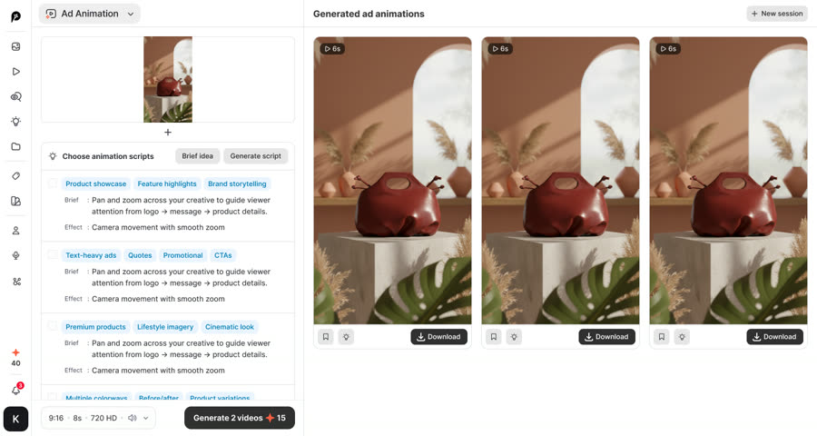

<!doctype html>
<html lang="vi">
<head>
<meta charset="utf-8">
<meta name="viewport" content="width=device-width, initial-scale=1, viewport-fit=cover">
<title>Plan video Promer AI</title>
<link rel="preconnect" href="https://fonts.googleapis.com">
<link rel="stylesheet" href="https://fonts.googleapis.com/css2?family=Inter:wght@400;500;600;700;800&display=swap">
<style>
/* 3 tầng: trang đầu (2 loại video) → danh sách → chi tiết + nút storyboard. Màu theo web promer.ai. */
:root{
  --bg:#E8E9EE; --card:#FFFFFF; --ink:#1B2034; --ink-2:#4A4F60; --ink-3:#7A7F8E; --line:#DEE1F3;
  --violet:#5B4BF0; --pink:#EC4899; --grad:linear-gradient(97deg,#5B4BF0 0%,#A63BE8 46%,#EC4899 100%);
  --done:#16A36B; --done-bg:#E4F6EE; --doing:#2F6BFF; --doing-bg:#E6EEFF; --wait:#B4520E; --wait-bg:#FEF1DA; --idle-bg:#F0F0F2;
  --sans:"Inter",system-ui,-apple-system,"Segoe UI",sans-serif;
}
*{box-sizing:border-box}
html,body{margin:0}
body{background:var(--bg);color:var(--ink);font-family:var(--sans);font-size:15px;line-height:1.55;
  padding-left:max(16px,env(safe-area-inset-left,0px));padding-right:max(16px,env(safe-area-inset-right,0px));padding-block:28px 64px}
.wrap{max-width:1080px;margin:0 auto}
a{color:inherit}
h1,h2,h3{margin:0;line-height:1.15;text-wrap:balance}
h1{font-size:clamp(28px,4vw,40px);font-weight:800;letter-spacing:-.02em}
h2{font-size:clamp(22px,3vw,30px);font-weight:800;letter-spacing:-.01em}
.sub{color:var(--ink-2);margin:8px 0 0;max-width:62ch}
.back{display:inline-flex;gap:6px;align-items:center;text-decoration:none;color:var(--violet);font-weight:600;font-size:14px;margin-bottom:16px}
.back:focus-visible,.tile:focus-visible,.vcard:focus-visible,.btn:focus-visible{outline:3px solid var(--violet);outline-offset:3px}
/* trang đầu */
.tiles{display:grid;grid-template-columns:repeat(auto-fit,minmax(300px,1fr));gap:20px;margin-top:28px}
.tile{display:flex;flex-direction:column;text-decoration:none;background:var(--card);border-radius:22px;overflow:hidden;box-shadow:0 8px 24px rgba(26,26,26,.08);transition:transform .2s}
.tile:hover{transform:translateY(-3px)}
.tile .art{position:relative;height:300px;display:flex;gap:10px;align-items:center;justify-content:center;background:#1B2034;overflow:hidden}
.tile .art::after{content:"";position:absolute;inset:0;background:linear-gradient(180deg,transparent 55%,rgba(27,32,52,.65))}
.tile .art img{height:84%;aspect-ratio:9/16;object-fit:cover;border-radius:12px;box-shadow:0 10px 30px rgba(0,0,0,.45)}
.tile .art img:nth-child(2){height:92%;z-index:1}
.tile.long .art{background:var(--grad)}
.tile .wide-mock{width:78%;aspect-ratio:16/9;border-radius:14px;background:rgba(255,255,255,.16);border:1px solid rgba(255,255,255,.4);display:flex;align-items:center;justify-content:center;color:#fff;font-weight:800;font-size:22px;letter-spacing:.02em}
.tile .art img.wide{height:auto;width:86%;aspect-ratio:16/9;object-fit:cover;object-position:left top;border-radius:12px}
.tile .txt{padding:18px 20px 20px;display:flex;flex-direction:column;gap:4px}
.tile .txt b{font-size:22px}
.tile .txt span{color:var(--ink-2);font-size:14px}
.tile .count{font-weight:700;color:var(--violet)}
/* danh sách */
.group{margin-top:28px}
.group h3{font-size:17px;font-weight:700;margin-bottom:4px}
.group p{margin:0 0 14px;color:var(--ink-3);font-size:14px}
.grid{display:grid;grid-template-columns:repeat(auto-fill,minmax(230px,1fr));gap:16px}
.grid.long{grid-template-columns:repeat(auto-fill,minmax(300px,1fr))}
.vcard{display:flex;flex-direction:column;text-decoration:none;background:var(--card);border-radius:18px;overflow:hidden;box-shadow:0 6px 18px rgba(26,26,26,.06);min-width:0;transition:transform .2s}
.vcard:hover{transform:translateY(-2px)}
.vcard .th{aspect-ratio:9/12;background:#1B2034 center/cover no-repeat;position:relative}
.grid.long .vcard .th{aspect-ratio:16/9}
.vcard .th.empty{background:var(--grad);display:flex;align-items:center;justify-content:center;padding:14px;text-align:center;color:#fff;font-size:13px;font-weight:600}
.vcard .num{position:absolute;left:10px;top:10px;background:rgba(255,255,255,.92);color:var(--ink);font-weight:800;font-size:12px;padding:3px 9px;border-radius:20px}
.vcard .bd{padding:12px 14px 14px;display:flex;flex-direction:column;gap:8px;min-width:0}
.vcard .nm{font-weight:700;font-size:15.5px;line-height:1.3}
.vcard .sm{color:var(--ink-2);font-size:13.5px}
.pill{align-self:flex-start;font-size:12px;font-weight:600;padding:3px 10px;border-radius:20px;background:var(--idle-bg);color:var(--ink-2)}
.pill.done{background:var(--done-bg);color:var(--done)}
.pill.doing{background:var(--doing-bg);color:var(--doing)}
.pill.wait{background:var(--wait-bg);color:var(--wait)}
/* chi tiết */
.detail{display:grid;grid-template-columns:minmax(0,320px) minmax(0,1fr);gap:28px;background:var(--card);border-radius:22px;padding:22px;box-shadow:0 8px 24px rgba(26,26,26,.08)}
.detail .big{width:100%;border-radius:16px;aspect-ratio:9/12;background:#1B2034 center/cover no-repeat}
.detail.long .big{aspect-ratio:16/9}
.detail .big.empty{background:var(--grad);display:flex;align-items:center;justify-content:center;color:#fff;padding:20px;text-align:center;font-weight:600}
.detail .info{display:flex;flex-direction:column;gap:14px;min-width:0}
.detail .lead{font-size:17px;color:var(--ink);margin:0}
.btn{display:inline-flex;align-items:center;gap:8px;text-decoration:none;font-weight:700;font-size:15px;padding:12px 20px;border-radius:14px;background:#1B2034;color:#fff;box-shadow:0 0 0 2px #fff,0 0 0 4px #A63BE8}
.btn.off{background:var(--idle-bg);color:var(--ink-3);box-shadow:none;cursor:default}
.minor{display:flex;flex-wrap:wrap;gap:8px}
.minor a{font-size:13px;color:var(--violet);text-decoration:none;border:1px solid var(--line);border-radius:10px;padding:6px 10px}
dl{display:grid;grid-template-columns:150px minmax(0,1fr);gap:8px 16px;margin:0;font-size:14.5px;border-top:1px solid var(--line);padding-top:14px}
dt{color:var(--ink-3);font-weight:600;font-size:13px}
dd{margin:0;color:var(--ink-2)}
dd b{color:var(--ink)}
.en{color:var(--ink);font-weight:600}
.vi{color:var(--ink-3);font-size:13.5px}
.hash{font-size:13px;color:var(--violet)}
.why{background:#F6F5FB;border-radius:14px;padding:12px 16px}
.why h4{margin:0 0 6px;font-size:13px;color:var(--ink-3)}
.why ul{margin:0;padding-left:18px;color:var(--ink-2);font-size:14px}
.btn.ghost{background:#fff;color:#1B2034;box-shadow:0 0 0 1px var(--line)}
.sched{margin-top:40px}
.slist{display:flex;flex-direction:column;gap:10px;margin-top:16px}
.srow{display:grid;grid-template-columns:64px 54px minmax(0,1fr) auto;gap:14px;align-items:center;background:var(--card);border-radius:16px;padding:10px 16px 10px 12px;text-decoration:none;box-shadow:0 4px 14px rgba(26,26,26,.05)}
.srow:hover{box-shadow:0 0 0 2px #A63BE8}
.srow:focus-visible{outline:3px solid var(--violet);outline-offset:3px}
.sday{display:flex;flex-direction:column;font-size:13px;color:var(--ink-3);line-height:1.3}
.sday b{font-size:18px;color:var(--ink)}
.srow img{width:54px;aspect-ratio:9/16;object-fit:cover;border-radius:8px}
.sinfo{display:flex;flex-direction:column;gap:2px;min-width:0}
.sinfo b{font-size:15px}
.sinfo span{font-size:13.5px;color:var(--ink-2)}
@media (max-width:560px){.srow{grid-template-columns:52px 44px minmax(0,1fr)}.srow .pill{display:none}.srow img{width:44px}}
.more{overflow-wrap:anywhere;margin-top:20px;background:var(--card);border-radius:22px;padding:22px;box-shadow:0 8px 24px rgba(26,26,26,.06);display:flex;flex-direction:column;gap:12px;min-width:0}
.more h2{font-size:clamp(19px,2.4vw,24px)}
.more h3{font-size:17px;margin-top:8px}
.more .eyebrow{font-size:12px;font-weight:600;letter-spacing:.06em;text-transform:uppercase;color:var(--ink-3)}
.more .lede,.more p{color:var(--ink-2);margin:0}
.more .table-wrap{overflow-x:auto}
.more table{border-collapse:collapse;width:100%;font-size:13.5px;font-variant-numeric:tabular-nums}
.more th,.more td{text-align:left;padding:8px 10px;border-bottom:1px solid var(--line);vertical-align:top}
.more th{color:var(--ink-3);font-weight:600}
.more ul{margin:0;padding-left:18px;color:var(--ink-2);display:flex;flex-direction:column;gap:6px}
.more a{color:var(--violet)}
footer{margin-top:36px;font-size:13px;color:var(--ink-3)}
footer a{color:var(--violet)}
@media (max-width:700px){
  .detail{grid-template-columns:1fr}
  .detail .big{max-width:280px}
  dl{grid-template-columns:1fr;gap:2px}
  dt{padding-top:8px}
  .tile .art{height:230px}
}
@media (prefers-reduced-motion:reduce){.tile,.vcard{transition:none}}
</style>
</head>
<body>
<div class="wrap" id="app"></div>
<script>
const V = [{"id": "s02", "kind": "short", "img": "img/posted/s02.jpg", "alt": "Thumbnail đã đăng: How to Turn a Sneaker Photo Into a Video Ad With AI", "num": "02", "name": "Giày · Hit the ground", "stc": "done", "st": "Đã đăng · 20:00 29/10 giờ VN", "tags": ["Một ảnh, nhiều bản để test", "Cho xem kết quả trước", "Đã có 3 video Promer thật"], "why": ["<b>50.520</b> shop giày trên Shopify, gấp khoảng <b>3,5</b> lần shop kính", "Thời trang là ngành trả tiền cho Promer nhiều nhất: <b>36%</b> người trả phí", "Thư viện Promer có <b>3.657</b> template giày (shoes + sneakers), nhiều nhất trong 12 ngành đã quét", "Ảnh giày đứng yên không cho thấy độ êm, độ bật; video cho thấy đúng chỗ đó"], "dl": [["Vấn đề shop", "Trang shop toàn ảnh giày tĩnh; muốn có nhiều bản quảng cáo để test mà không chụp lại."], ["Số shop Shopify", "<b>50.520</b> shop giày"], ["Hook", "<span class=\"en\">\"Shopify sellers: one photo, three shoe ads.\"</span><br><span class=\"vi\">Merchant Shopify: một ảnh, ba quảng cáo giày.</span>"], ["Bản đã đăng", "26,4 giây · tiêu đề \"How to Turn a Sneaker Photo Into a Video Ad With AI\" · thumbnail khung hook"], ["Ba bản", "Giày bay lơ lửng · góc máy thấp trời xanh · lao tới bắn nước (video Promer đã tạo)"], ["Người xem tìm gì", "Cách biến ảnh sản phẩm thành video quảng cáo; ý tưởng quảng cáo cho shop giày<br><span class=\"vi\">Gõ trên YouTube: \"product photo to video ai\" · \"shoes marketing ideas\"</span>"], ["Hashtag", "<span class=\"hash\">#shopify #shoesmarketing #productphototovideo #aiads #shorts #ecommerce #dropshipping</span>"]], "btns": [{"href": "https://youtube.com/shorts/xdDqj3qACIs", "text": "Xem trên YouTube →", "main": true}, {"href": "storyboard-v2.html#s02", "text": "Storyboard v2", "main": false}, {"href": "storyboard-shorts-02.html", "text": "Bản 28/10 (A · B · C)", "main": false}], "post": {"day": "2026-10-29", "date": "29/10", "time": "20:00", "ny": "9:00 AM New York", "yt": "https://youtube.com/shorts/xdDqj3qACIs", "product": "Giày thể thao (một ảnh, ra 3 video quảng cáo)", "title": "How to Turn a Sneaker Photo Into a Video Ad With AI", "img": "img/posted/s02.jpg"}, "more": ["<h2>Vì sao Short 02 là giày</h2>\n    <div class=\"table-wrap\"><table>\n      <tr><th>Lý do</th><th>Số liệu</th></tr>\n      <tr><td>Shop giày trên Shopify nhiều</td><td>• <b>50.520</b> shop giày đang hoạt động, khoảng <b>1,6%</b> trong <b>3.189.133</b> shop Shopify<br>• Khoảng <b>5,9%</b> nhóm thời trang (<b>862.961</b> shop), đứng <b>thứ 4</b> trong nhóm<br>• Ở Mỹ: <b>16.758</b> shop (<b>33,2%</b>)<br>• Nhiều gấp khoảng <b>3,5</b> lần shop kính (<b>14.382</b>)</td></tr>\n      <tr><td>Thời trang là ngành trả tiền cho Promer nhiều nhất</td><td><b>36%</b> người trả phí là thời trang; giày thuộc nhóm này (chưa có số riêng)</td></tr>\n      <tr><td>Thư viện Promer có nhiều mẫu giày</td><td>• \"shoes\": <b>2.152</b> template<br>• \"sneakers\": <b>1.505</b> template<br>• Cộng lại đứng đầu 12 ngành đã quét</td></tr>\n      <tr><td>Merchant đang tìm</td><td>• \"shoes marketing ideas\": từ khoá chính của trang Ad Concept<br>• Trang Image to Video: <b>76,7</b> trong 100 lượt vào bấm vào app</td></tr>\n      <tr><td>Ảnh tĩnh thiệt nhất với giày</td><td>Điểm bán của giày là độ êm, độ bật khi bước; ảnh trên sàn không cho thấy, video thì cho thấy</td></tr>\n    </table></div>\n    <h2 style=\"margin-top:18px\">Vì sao là đôi giày này</h2>\n    <ul class=\"ask\">\n      <li><b>Chỉ có sản phẩm, không có người:</b> AI Ad Animation không dựng được người thật.</li>\n      <li><b>Ba bản khác nhau rõ:</b> lơ lửng trên nền san hô, góc máy thấp trời xanh, lao tới bắn nước.</li>\n      <li><b>Đôi giày phổ thông:</b> giày chạy bộ trắng sọc cam; merchant bán sneaker nào cũng thấy giống hàng mình.</li>\n      <li><b>Thương hiệu:</b> giày nhãn Promer ở gót, ghi \"AI-generated · Fictional brand\".</li>\n    </ul>\n    <p class=\"lede\" style=\"margin-top:8px\">Nguồn số shop: <a href=\"https://storeleads.app/reports/shopify/category/Apparel/Footwear\" target=\"_blank\" rel=\"noopener\">Store Leads</a>, cập nhật 23/10/2026. Số người trả phí, template và trang đích: số đo nội bộ của Promer. Chưa có: số merchant giày đang dùng Promer, số lượt tìm \"shoes marketing ideas\" trên YouTube.</p>"], "group": "channel", "sum": "Trang shop toàn ảnh giày tĩnh; muốn có nhiều bản quảng cáo để test mà không chụp lại."}, {"id": "s03", "kind": "short", "img": "img/posted/s03.jpg", "alt": "Thumbnail đã đăng: Black Friday Ads Not Ready? Turn 1 Product Photo Into 3 Ads", "num": "03", "name": "Cà phê · Black Friday · The Seller Times", "stc": "done", "st": "Đã đăng · 20:30 31/10 giờ VN", "tags": ["Mùa Black Friday", "Hỏi nỗi lo trước", "Đổi nước hoa → cà phê (tránh trùng Shorts 01)"], "why": ["Black Friday <b>27/11/2026</b>: còn gần 4 tuần để video được tìm thấy", "<b>44.154</b> shop cà phê và trà trên Shopify, <b>19.521</b> ở Mỹ", "Thư viện Promer có <b>945</b> template cà phê", "Chưa video nào của kênh dùng cà phê"], "dl": [["Cách triển khai", "<b>Tờ báo</b>: trang nhất tít \"BLACK FRIDAY: YOUR ADS AREN'T READY\", ảnh túi cà phê trên báo cử động, lật trang sang bản quảng cáo tiếp. Ý tưởng từ pin \"The Scent Times\"."], ["Vấn đề shop", "Sắp Black Friday mà chưa có quảng cáo mùa sale, không kịp chụp mới."], ["Số shop Shopify", "<b>44.154</b> shop cà phê và trà"], ["Hook", "<span class=\"en\">\"Shopify sellers, Black Friday ads not ready?\"</span><br><span class=\"vi\">Merchant Shopify, quảng cáo Black Friday chưa xong?</span>"], ["Người xem tìm gì", "Quảng cáo Black Friday cho shop; ý tưởng quảng cáo cà phê<br><span class=\"vi\">Gõ trên YouTube: \"black friday ads shopify\" · \"coffee ad ideas\" (cả hai chưa đo)</span>"], ["Hashtag", "<span class=\"hash\">#shopify #blackfridayads #coffeebrand #aiads #shorts #ecommerce #dropshipping</span>"]], "btns": [{"href": "storyboard-s03.html", "text": "Xem storyboard Shorts 03 →", "main": true}], "post": {"day": "2026-10-31", "date": "31/10", "time": "20:30", "ny": "9:30 AM New York", "yt": "https://youtube.com/shorts/mpGG8eunPMo", "product": "Cà phê (túi cà phê, mùa Black Friday)", "title": "Black Friday Ads Not Ready? Turn 1 Product Photo Into 3 Ads", "img": "img/posted/s03.jpg"}, "more": ["<div class=\"eyebrow\">Shorts 03 · bước 1 Content · bản 1 · chờ duyệt</div>\n    <h2 class=\"big\">Shorts 03 · The Seller Times: Black Friday cho shop cà phê</h2>\n    <p style=\"margin-top:6px\"><a class=\"btn\" href=\"storyboard-s03.html\">Xem storyboard có nhân vật, góc máy, tiêu cự, khẩu độ, màn trập →</a></p>\n\n    <h2 style=\"margin-top:12px\">Video kể gì (đọc 20 giây)</h2>\n    <ul class=\"ask\">\n      <li>Một tờ báo xoay vào khung. Tít trang nhất: <b>\"BLACK FRIDAY: YOUR ADS AREN'T READY\"</b>, nói đúng nỗi lo của chủ shop.</li>\n      <li>Ảnh túi cà phê chụp điện thoại in trên trang báo bỗng <b>cử động</b>: ảnh tĩnh thành video ngay trong giây đầu.</li>\n      <li>Lật trang báo, mỗi trang là <b>một việc</b> của quảng cáo Black Friday: <b>Deal</b> (cho thấy giá giảm) · <b>Deadline</b> (cho thấy ngày hết) · <b>Bundle</b> (cho thấy mua nhiều hơn). Mỗi trang là một video Promer thật làm từ cùng tấm ảnh đó.</li>\n      <li>Mặt sau tờ báo là ô rao vặt: màn kết quả Promer AI Ad Animation, rồi mục \"Reader poll\" hỏi người xem chạy bản nào trước.</li>\n    </ul>\n\n    <h2 style=\"margin-top:18px\">Người xem được gì</h2>\n    <div class=\"table-wrap\"><table>\n      <tr><th>Câu hỏi</th><th>Trả lời</th><th>Mức</th></tr>\n      <tr><td>Vì sao họ dừng lại?</td><td>Khung đầu là trang nhất báo với tít đúng nỗi lo tháng 11 của chủ shop. Ở giây 1,5 ảnh trên báo cử động, nên họ thấy trước/sau trước khi kịp lướt.</td><td>Khá. Tít báo nhiều chữ: chữ tít phải to (cao ≥ 90 px trên khung 1080), chỉ 5 chữ đọc được.</td></tr>\n      <tr><td>Họ mang về được gì?</td><td>Một cách chia việc dùng ngay, kể cả không dùng Promer: quảng cáo Black Friday làm <b>3 bản cho 3 việc</b> (giá · hạn chót · combo) từ cùng một ảnh, rồi để tài khoản quảng cáo chọn bản thắng.</td><td>Khá. Là lời khuyên cách làm, không phải số liệu, nên không cần dẫn nguồn.</td></tr>\n      <tr><td>Xem xong họ làm gì khác?</td><td>Lấy ảnh sản phẩm bán chạy nhất, chọn việc cho bản đầu tiên, bình luận 1, 2 hoặc 3. Related video dẫn sang video dài Black Friday (L2).</td><td>Trung bình. L2 chưa làm, tạm để Related video trỏ về video kênh gần nhất.</td></tr>\n    </table></div>\n\n    <h2 style=\"margin-top:18px\">Các cảnh (khoảng 25 giây, giọng Emma, phụ đề cứng)</h2>\n    <p class=\"lede\" style=\"margin-bottom:8px\">Lời đọc 48 chữ, khoảng 14–18 giây theo tốc độ Emma (2,6–3,4 chữ/giây). Chữ trên tờ báo tránh ô phụ đề (y 1365–1440).</p>\n    <div class=\"table-wrap\"><table>\n      <tr><th>Cảnh</th><th>Giây</th><th>Hình</th><th>Lời đọc</th></tr>\n      <tr><td><b>SC01_Hook</b></td><td>0–3</td><td>Tờ báo xoay vào khung kiểu phim cũ, dừng ở 0,6 giây. Măng-sét \"THE SELLER TIMES\", tít \"BLACK FRIDAY: YOUR ADS AREN'T READY\", chữ nhỏ \"For Shopify sellers\". Ảnh túi cà phê chụp điện thoại in trên báo; giây 1,5 ảnh bắt đầu cử động (video Promer).</td><td><span class=\"en\">\"Shopify sellers, Black Friday ads not ready?\"</span><br><span class=\"vi\">Merchant Shopify, quảng cáo Black Friday chưa xong?</span></td></tr>\n      <tr><td><b>SC02_Clipping</b></td><td>3–6</td><td>Máy đẩy vào khung ảnh trên báo. Góc trang ghim mẩu ảnh gốc chụp điện thoại, chú thích \"the only photo\".</td><td><span class=\"en\">\"Skip the reshoot. Give one photo three jobs.\"</span><br><span class=\"vi\">Khỏi chụp lại. Giao cho một tấm ảnh ba việc.</span></td></tr>\n      <tr><td><b>SC03_Deal</b></td><td>6–10</td><td>Lật trang, đầu trang \"PAGE 2 · THE DEAL\". Video Promer bản 1: hạt cà phê bung quanh túi, nhịp mạnh đúng drop nhạc; chữ giá giảm do AE dựng trên trang báo, không nằm trong video.</td><td><span class=\"en\">\"Job one: sell the deal.\"</span><br><span class=\"vi\">Việc một: bán cái giá.</span></td></tr>\n      <tr><td><b>SC04_Deadline</b></td><td>10–14</td><td>Lật trang, \"PAGE 3 · THE DEADLINE\". Video bản 2: phòng tối, một đèn spot rọi túi, hơi nóng bốc lên; AE thêm \"ENDS MONDAY\" kiểu tít báo.</td><td><span class=\"en\">\"Job two: sell the deadline.\"</span><br><span class=\"vi\">Việc hai: bán hạn chót.</span></td></tr>\n      <tr><td><b>SC05_Bundle</b></td><td>14–18</td><td>Lật trang, \"PAGE 4 · THE BUNDLE\". Video bản 3: ba túi lần lượt rơi xuống xếp hàng.</td><td><span class=\"en\">\"Job three: sell the bundle.\"</span><br><span class=\"vi\">Việc ba: bán combo.</span></td></tr>\n      <tr><td><b>SC06_Classifieds</b></td><td>18–21</td><td>Tờ báo gập lại. Mặt sau có ô rao vặt: màn kết quả Promer AI Ad Animation dựng lại trong AE (ảnh túi vào, 3 video ra), dòng \"Made in Promer AI · Ad Animation\".</td><td><span class=\"en\">\"All three made in Promer AI from that one photo.\"</span><br><span class=\"vi\">Cả ba làm trong Promer AI từ đúng tấm ảnh đó.</span></td></tr>\n      <tr><td><b>SC07_Outro</b></td><td>21–25</td><td>Mục \"READER POLL\" trên mặt sau: 3 ảnh nhỏ đánh số 1, 2, 3, câu hỏi, logo Promer AI.</td><td><span class=\"en\">\"Which one runs first? Comment 1, 2, or 3.\"</span><br><span class=\"vi\">Bản nào chạy trước? Bình luận 1, 2 hoặc 3.</span></td></tr>\n    </table></div>\n\n    <h2 style=\"margin-top:18px\">Nguồn ý tưởng</h2>\n    <ul class=\"ask\">\n      <li><b>Pin \"The Scent Times · don't gatekeep your perfume\"</b> (Pinterest, từ khoá \"perfume ad creative\", xem ngày 29/10/2026; ảnh lưới `02_Reference/pinterest_29-10/s03_perfume_pinterest.jpg`). Trong pin: một người cầm tờ báo che mặt, trang báo in chai nước hoa, ly cà phê trên bàn.</li>\n      <li><b>Lấy:</b> format tờ báo làm khung quảng cáo, tít giật một dòng.</li>\n      <li><b>Đổi:</b> không có người cầm báo (báo tự xoay vào khung); tít thành nỗi lo mùa sale của chủ shop; ảnh in trên báo cử động thành video Promer; lật trang để sang bản tiếp; mặt sau thành ô rao vặt và mục bình chọn.</li>\n    </ul>\n\n    <h2 style=\"margin-top:18px\">Đối chiếu trùng (6 ô)</h2>\n    <div class=\"table-wrap\"><table>\n      <tr><th>Ô</th><th>Shorts 03</th><th>Gần nhất đã có</th><th>Kết luận</th></tr>\n      <tr><td>Lời hứa chính</td><td>Quảng cáo Black Friday có 3 việc: giá, hạn chót, combo</td><td>Shorts 02 \"một ảnh, ba quảng cáo\"; Short kênh \"10 Ads, Same Idea? Find New Ad Angles\"</td><td>Khác: 03 nói loại ưu đãi mùa sale, không nói góc sáng tạo hay tính năng Ad Concept. Gần nhất là Short kênh, cần anh xem.</td></tr>\n      <tr><td>Sản phẩm demo</td><td>Túi cà phê nhãn Promer</td><td>Chưa video nào dùng cà phê</td><td>Không trùng</td></tr>\n      <tr><td>Hình mở, kiểu mở</td><td>Trang nhất tờ báo, hỏi nỗi lo trước</td><td>01 ảnh điện thoại · 02 trang shop</td><td>Không trùng</td></tr>\n      <tr><td>Concept hình</td><td>Tờ báo, lật trang</td><td>04 nét son · 05 nút gạt · 06 zoom mặt số · 07 ghép hình · 08 túi khổng lồ ngoài phố</td><td>Không trùng</td></tr>\n      <tr><td>Cảnh Promer</td><td>Màn kết quả Ad Animation trong ô rao vặt, khoảng 1,5 giây</td><td>01 thanh prompt · 02 tick ý tưởng · dài #01 đi hết các bước Ad Animation</td><td>Không trùng. #01 đang tạm dừng; khi làm lại thì #01 không dùng màn kết quả này.</td></tr>\n      <tr><td>Câu hook</td><td>\"Shopify sellers, Black Friday ads not ready?\"</td><td>08 \"one bag photo, three Black Friday ads\"</td><td>Gần về mùa: hook 08 đổi sang quà tặng khi làm Content 08</td></tr>\n    </table></div>\n\n    <h2 style=\"margin-top:18px\">Cần anh chốt</h2>\n    <ol class=\"ask\">\n      <li><b>Sản phẩm cà phê?</b> Lý do chọn:\n        <ul>\n          <li><b>44.154</b> shop cà phê và trà trên Shopify (Store Leads, xem 29/10/2026), gần bằng giày (<b>50.520</b>)</li>\n          <li><b>945</b> template cà phê trong thư viện Promer (đo 26/10)</li>\n          <li>Chưa video nào dùng cà phê</li>\n          <li>Tờ báo và cà phê buổi sáng vốn đi cùng nhau</li>\n        </ul>\n        Phương án B: kính mát (sản phẩm cũ của 03), <b>14.382</b> shop, <b>849</b> template; thuộc nhóm thời trang nhưng tháng 11 không phải mùa kính.</li>\n      <li><b>Câu kết bình chọn.</b> Luật review 29/10 có CTA chung \"Comment 1, 2 or 3\", còn bảng đối chiếu ghi khung bình chọn 1/2/3 là của Shorts 02. Em đề xuất giữ câu hỏi kéo bình luận nhưng đổi hình thành mục \"Reader poll\" trên báo, câu hỏi \"Which one runs first?\".</li>\n      <li><b>Credit.</b> Cần 3 video Promer:\n        <ul>\n          <li>mỗi video khoảng <b>48</b> credit (Veo 3.1, 8 giây, tắt tiếng), 3 video khoảng <b>144</b></li>\n          <li>đang còn <b>47</b></li>\n        </ul>\n        Bản 3 (ba túi xếp hàng) có thể Promer không giữ đúng 3 túi giống nhau; em tạo bản đó sau cùng, lỗi thì báo anh trước khi tạo lại.</li>\n      <li><b>Tên báo \"The Seller Times\".</b> Không đặt chữ Shopify trên măng-sét để khỏi giống ấn phẩm của Shopify; chữ \"For Shopify sellers\" để nhỏ dưới măng-sét.</li>\n    </ol>"], "group": "channel", "sum": "Black Friday sắp tới mà quảng cáo chưa sẵn sàng. Chụp một ảnh túi cà phê bằng điện thoại, đưa vào Promer, ra 3 video quảng cáo rồi đưa lên trang Shopify."}, {"id": "s04", "kind": "short", "img": "img/T01_makeup_20.jpg", "alt": "Template son trong hộp cứu hoả", "num": "04", "name": "Son · Break the glass", "stc": "wait", "st": "Bước 2 Idea · chờ duyệt plan v3", "tags": ["Không chụp lại", "Hỏi nỗi lo trước"], "why": ["Từ khoá \"lipstick ad ideas\" ưu tiên P0, <b>13,8 triệu</b> view", "Nhóm làm đẹp: <b>18%</b> người trả phí cho Promer", "Merchant son thiếu ý tưởng hơn thiếu ảnh: video cho một ý tưởng làm được ngay", "Kéo người xem sang video dài về son"], "dl": [["Cách triển khai v3", "<b>Nét son làm chuyển cảnh</b>: mỗi nét son quét ngang khung lau sang bản quảng cáo tiếp, một cú máy liền; nét cuối viết chữ \"Promer\". Ý tưởng từ pin bảng 9 mẫu son quẹt."], ["Vấn đề shop", "Cần quảng cáo son mới nhưng không muốn tổ chức buổi chụp mới."], ["Số shop Shopify", "Cả nhóm chăm sóc da và cơ thể: <b>218.354</b> shop (chưa có số riêng son)"], ["Hook", "<span class=\"en\">\"Shopify sellers: new lipstick ad, no reshoot?\"</span><br><span class=\"vi\">Quảng cáo son mới mà không phải chụp lại? Cảnh kính vỡ hiện ngay giây đầu.</span>"], ["Người xem tìm gì", "Ý tưởng quảng cáo son khác với các shop khác<br><span class=\"vi\">Gõ trên YouTube: \"lipstick ad ideas\"</span>"], ["Hashtag", "<span class=\"hash\">#shopify #lipstickads #beautymarketing #aiads #shorts #ecommerce #dropshipping</span>"]], "btns": [{"href": "storyboard-v2.html#s04", "text": "Xem storyboard v2 →", "main": true}], "more": [], "group": "channel", "sum": "Nét son làm chuyển cảnh: mỗi nét son quét ngang khung lau sang bản quảng cáo tiếp, một cú máy liền; nét cuối viết chữ \"Promer\". Ý tưởng từ pin bảng 9 mẫu son quẹt."}, {"id": "s05", "kind": "short", "img": "img/T04_serum_04.jpg", "alt": "Template serum và nhân sâm", "num": "05", "name": "Skincare · From the root", "stc": "wait", "st": "Bước 2 Idea · chờ duyệt plan v3", "tags": ["Kể câu chuyện sản phẩm", "Hỏi nỗi lo trước"], "why": ["Nhóm chăm sóc da và cơ thể: <b>218.354</b> shop, đông nhất trong 7 ngành", "Thư viện Promer có <b>2.510</b> template skincare + <b>1.852</b> template serum", "Nhóm làm đẹp: <b>18%</b> người trả phí cho Promer", "Kéo người xem sang video dài UGC serum"], "dl": [["Cách triển khai v3", "<b>Công tắc giao diện</b>: nút gạt kiểu iPhone \"Studio: OFF → ON\", \"Story: OFF → ON\", \"Motion: OFF → ON\" đặt lên ảnh; mỗi lần gạt cảnh đổi. Ý tưởng từ pin \"dry skin: OFF\"."], ["Vấn đề shop", "Chỉ có ảnh chai trên kệ, không nói được thành phần."], ["Số shop Shopify", "Cả nhóm chăm sóc da và cơ thể: <b>218.354</b> shop (chưa có số riêng serum)"], ["Hook", "<span class=\"en\">\"Shopify skincare brands, don't just show the bottle.\"</span><br><span class=\"vi\">Brand skincare trên Shopify, đừng chỉ cho xem cái chai. (review: hook ổn, giữ)</span>"], ["Người xem tìm gì", "Cách quảng cáo mỹ phẩm, skincare ngoài ảnh chai trên kệ<br><span class=\"vi\">Gõ trên YouTube: \"cosmetic marketing ideas\" · \"ugc skincare ads\"</span>"], ["Hashtag", "<span class=\"hash\">#shopify #skincareads #cosmeticmarketing #aiads #shorts #ecommerce #dropshipping</span>"]], "btns": [{"href": "storyboard-v2.html#s05", "text": "Xem storyboard v2 →", "main": true}], "more": [], "group": "channel", "sum": "Công tắc giao diện: nút gạt kiểu iPhone \"Studio: OFF → ON\", \"Story: OFF → ON\", \"Motion: OFF → ON\" đặt lên ảnh; mỗi lần gạt cảnh đổi. Ý tưởng từ pin \"dry skin: OFF\"."}, {"id": "s06", "kind": "short", "img": "img/T03_watch_17.jpg", "alt": "Template đồng hồ và tia sáng", "num": "06", "name": "Đồng hồ · Every second", "stc": "wait", "st": "Bước 2 Idea · chờ duyệt plan v3", "tags": ["Làm mới creative", "Cho xem kết quả trước"], "why": ["Từ khoá \"watch ad ideas\", \"watch paid ads youtube\"", "Thư viện Promer có <b>1.136</b> template đồng hồ; mẫu đồng hồ được dùng nhiều nhất trong các mẫu mới (<b>24</b> lượt)", "Đồng hồ bán bằng chi tiết mặt số, mà ảnh cổ tay hay bị loá", "Kéo người xem sang video dài 5 dạng quảng cáo"], "dl": [["Cách triển khai v3", "<b>Zoom vô tận một cú máy</b>: máy lao vào mặt số, xuyên qua là bản quảng cáo tiếp, lặp 3 lần, lùi ra thấy đồng hồ trên trang shop. Ý tưởng từ pin Casio mặt số thành đường cao tốc."], ["Vấn đề shop", "Ảnh cổ tay bị loá, không thấy chi tiết mặt số; quảng cáo cũ cần làm mới."], ["Số shop Shopify", "Cả nhóm phụ kiện: <b>197.961</b> shop (chưa có số riêng đồng hồ)"], ["Hook", "<span class=\"en\">\"Shopify watch sellers: show every detail.\"</span><br><span class=\"vi\">Shop đồng hồ trên Shopify: cho thấy từng chi tiết. (6 chữ)</span>"], ["Người xem tìm gì", "Ý tưởng quảng cáo đồng hồ, quảng cáo đồng hồ trên YouTube<br><span class=\"vi\">Gõ trên YouTube: \"watch ad ideas\" · \"watch paid ads youtube\"</span>"], ["Hashtag", "<span class=\"hash\">#shopify #watchads #productphototovideo #aiads #shorts #ecommerce #dropshipping</span>"]], "btns": [{"href": "storyboard-v2.html#s06", "text": "Xem storyboard v2 →", "main": true}], "more": [], "group": "channel", "sum": "Zoom vô tận một cú máy: máy lao vào mặt số, xuyên qua là bản quảng cáo tiếp, lặp 3 lần, lùi ra thấy đồng hồ trên trang shop. Ý tưởng từ pin Casio mặt số thành đường cao…"}, {"id": "s07", "kind": "short", "img": "img/T06_jewelry_21.jpg", "alt": "Template nhẫn trên mặt trăng đen", "num": "07", "name": "Trang sức · Rise", "stc": "wait", "st": "Bước 2 Idea · chờ duyệt plan v3", "tags": ["Đồ nhỏ khó chụp", "Cho xem kết quả trước"], "why": ["Từ khoá \"jewelry advertising ideas\", \"ads for jewelry\"", "Thư viện Promer có <b>1.339</b> template trang sức", "Đồ nhỏ, khó chụp đẹp bằng điện thoại: chỗ AI giúp được nhiều nhất", "Đúng mùa quà tặng cuối năm, kéo sang video dài trang sức"], "dl": [["Cách triển khai v3", "<b>Ghép hình</b>: khung quảng cáo mùa lễ thiếu một mảnh, \"Missing a piece?\"; mảnh cuối là ảnh nhẫn chụp điện thoại, cả bức tranh sống dậy. Ý tưởng từ pin \"Missing a Piece?\"."], ["Vấn đề shop", "Đồ nhỏ, khó chụp, ảnh trên khay nhung trông rẻ."], ["Số shop Shopify", "Cả nhóm phụ kiện: <b>197.961</b> shop (chưa có số riêng trang sức)"], ["Hook", "<span class=\"en\">\"Shopify sellers: turn one ring photo into a holiday ad.\"</span><br><span class=\"vi\">Biến một ảnh nhẫn thành quảng cáo mùa lễ. Câu thứ hai: \"Small product, hard to shoot?\"</span>"], ["Người xem tìm gì", "Cách quảng cáo trang sức, đồ nhỏ khó chụp<br><span class=\"vi\">Gõ trên YouTube: \"jewelry advertising ideas\" · \"ads for jewelry\"</span>"], ["Hashtag", "<span class=\"hash\">#shopify #jewelryads #jewelrymarketing #aiads #shorts #ecommerce #dropshipping</span>"]], "btns": [{"href": "storyboard-v2.html#s07", "text": "Xem storyboard v2 →", "main": true}], "more": [], "group": "channel", "sum": "Ghép hình: khung quảng cáo mùa lễ thiếu một mảnh, \"Missing a piece?\"; mảnh cuối là ảnh nhẫn chụp điện thoại, cả bức tranh sống dậy. Ý tưởng từ pin \"Missing a Piece?\"."}, {"id": "s08", "kind": "short", "img": "img/posted/s08.jpg", "alt": "Thumbnail đã đăng: The Easiest Way to Give Every Colorway Its Own Ad", "num": "08", "name": "Túi xách · Mỗi màu một quảng cáo", "stc": "done", "st": "Đã đăng · 23:00 30/10 giờ VN", "tags": ["Một sản phẩm, nhiều màu", "Video mẫu anh gửi 30/10"], "why": ["Ý mới anh gửi 30/10 (video mẫu bag variants), làm xen giữa plan, không thay video túi Bloom."], "dl": [["Lấy ý tưởng từ", "Video mẫu \"bag variants\" anh gửi ngày 30/10: cùng một người mẫu đeo túi qua 6 nơi, mỗi nơi một màu."]], "btns": [], "post": {"day": "2026-10-30", "date": "30/10", "time": "23:00", "ny": "12:00 PM New York", "yt": "https://youtube.com/shorts/RsyXG7inH2g", "product": "Túi xách 6 màu (mỗi màu một video quảng cáo)", "title": "The Easiest Way to Give Every Colorway Its Own Ad", "img": "img/posted/s08.jpg"}, "more": [], "group": "channel", "sum": "Một chiếc túi có 6 màu. Thay vì để 6 màu nằm chung một lưới ảnh, mỗi màu có một video quảng cáo riêng. Cuối video hỏi người xem thích màu nào."}, {"id": "s08-bloom", "kind": "short", "img": "img/T07_handbag_18.jpg", "alt": "Template túi tote cắm hoa", "num": "09", "name": "Túi xách · Bloom · Black Friday", "stc": "wait", "st": "Bước 2 Idea · chờ duyệt plan v3", "tags": ["Mùa Black Friday, quà tặng", "Cho xem kết quả trước"], "why": ["Nhóm phụ kiện: <b>197.961</b> shop trên Shopify", "Thư viện Promer có <b>1.430</b> template túi xách", "Thời trang là ngành trả tiền cho Promer nhiều nhất: <b>36%</b> người trả phí", "Review 29/10: lồng ghép Black Friday", "Trong plan v2 thẻ này mang số 08. Số 08 nay là video túi 6 màu đã đăng 30/10, nên thẻ này tạm đánh số 09."], "dl": [["Cách triển khai v3", "<b>Quảng cáo giả ngoài đời (FOOH)</b>: túi khổng lồ trên nóc taxi giữa phố ngày Black Friday, hoa nở bung; cắt về ảnh túi trên móc \"this was one photo\". Ý tưởng từ pin túi đỏ trên taxi New York."], ["Vấn đề shop", "Ảnh túi treo trên móc, không có không khí quà tặng mùa Black Friday."], ["Số shop Shopify", "Cả nhóm phụ kiện: <b>197.961</b> shop (chưa có số riêng túi)"], ["Hook", "<span class=\"en\">\"Shopify sellers: one bag photo, three Black Friday ads.\"</span><br><span class=\"vi\">Một ảnh túi, ba quảng cáo Black Friday.</span>"], ["Người xem tìm gì", "Mẫu video quảng cáo cho shop thời trang, phụ kiện<br><span class=\"vi\">Gõ trên YouTube: \"clothing store ad video template\" · \"clothing brand ad creative\"</span>"], ["Hashtag", "<span class=\"hash\">#shopify #fashionads #blackfridayads #aiads #shorts #ecommerce #dropshipping</span>"]], "btns": [{"href": "storyboard-v2.html#s08", "text": "Xem storyboard v2 →", "main": true}], "more": [], "group": "channel", "sum": "Quảng cáo giả ngoài đời (FOOH): túi khổng lồ trên nóc taxi giữa phố ngày Black Friday, hoa nở bung; cắt về ảnh túi trên móc \"this was one photo\". Ý tưởng từ pin túi đỏ…"}, {"id": "l01", "kind": "long", "img": null, "alt": "Hũ nến nhãn Promer: tạo ở bước Key visual", "num": "#01", "name": "Product Image to Video AI", "stc": "wait", "st": "Bước 1 Content · chờ duyệt", "tags": ["Thứ tự làm: 1", "M3 · đang tìm công cụ", "Ad Animation · AI UGC Ads · Video Ad Clone", "Nhà cửa · nến thơm"], "why": ["Trang đích tốt nhất cả plan: <b>77</b> trong 100 lượt vào bấm vào app, <b>32</b> đăng ký", "Từ khoá P0: <b>9/10</b> video top đúng chủ đề, <b>759K</b> view video dài, cao nhất <b>515K</b>", "Video top của Eigi (<b>138K</b>, 4 ngày) chấm AI có giữ đúng bao bì, logo: người xem quan tâm \"giữ đúng sản phẩm\", kênh chưa nói", "Video dài đầu tiên: đo thật công làm và credit"], "dl": [["Angle", "Một tấm ảnh sản phẩm ra 3 quảng cáo, mỗi cái một việc: dừng lướt · tạo lòng tin · có bản mới khi bản cũ mòn. Mỗi cái kèm chỗ hay hỏng và cách tránh."], ["Câu mở", "<span class=\"en\">\"Shopify sellers, this is the only photo I had of this candle. Watch what's on the back.\"</span><br><span class=\"vi\">Hình: bàn tay lật tấm ảnh in hũ nến, mặt sau lần lượt là 3 quảng cáo.</span>"], ["Tiêu đề", "Product Image to Video AI: 3 Video Ads From One Product Photo (Step by Step)"], ["Từ khoá", "<span class=\"hash\">product image to video ai · ai product animation tutorial · product photo to video ai free</span>"], ["Lấy ý tưởng từ", "LunaAi \"Turn ONE Photo into a Cinematic AI Commercial\" (<b>114K</b> view) · taysthetic \"how i turn product images into (animated) video ads\" (<b>515K</b> view). Lấy: mở bằng thành phẩm, đặt ảnh tĩnh cạnh video. Đổi: nói với chủ shop, thêm phần giữ đúng nhãn và hình chai."]], "btns": [{"href": null, "text": "Storyboard: chưa làm (bước 4)"}], "more": ["<div class=\"eyebrow\">Video dài #01 · bước 1 Content · bản 3 (3 tính năng + hook \"tấm ảnh lật mặt\") · chờ duyệt</div>\n    <h2 class=\"big\">#01 Product Image to Video AI: nội dung (bản 3)</h2>\n\n    <h2 style=\"margin-top:12px\">Video kể gì (đọc 30 giây)</h2>\n    <ul class=\"ask\">\n      <li>Một shop nến chỉ có <b>một tấm ảnh</b> chụp điện thoại của hũ nến.</li>\n      <li>Từ tấm ảnh đó làm ra <b>3 quảng cáo, mỗi cái một việc</b>: video sản phẩm (AI Ad Animation) để người ta dừng lướt · một người cầm hũ nến review (AI UGC Ads) để người mua tin · một quảng cáo theo khung quảng cáo đã chạy lâu (Video Ad Clone) để có bản mới khi bản cũ mòn.</li>\n      <li>Mỗi quảng cáo chỉ ra <b>một chỗ hay hỏng và cách tránh</b>: đó là thứ người xem mang về, kể cả khi không dùng Promer.</li>\n      <li>Kết bằng <b>phiếu kiểm 5 điều</b> và <b>số credit, số phút đo thật</b>.</li>\n    </ul>\n\n    <h2 style=\"margin-top:18px\">Người xem được gì</h2>\n    <div class=\"table-wrap\"><table>\n      <tr><th>Câu hỏi</th><th>Trả lời</th><th>Mức</th></tr>\n      <tr><td>Vì sao họ dừng lại?</td><td>Trong 25 giây đầu đã thấy cả 3 quảng cáo chạy, bật ra từ mặt sau của một tấm ảnh bình thường.</td><td>Khá, cần hình đẹp thật</td></tr>\n      <tr><td>Họ mang về được gì?</td><td>• Cách chụp 1 ảnh dùng được cho mọi công cụ AI<br>• Cách viết ý chuyển động có dòng Keep và End, chọn video theo khung cuối<br>• 3 điều kiểm video UGC: tay · nhãn · lời<br>• Chép cấu trúc, không chép thương hiệu<br>• Phiếu kiểm 5 điều trước khi chạy</td><td>Tốt</td></tr>\n      <tr><td>Xem xong họ làm gì khác?</td><td>Chụp lại ảnh sản phẩm theo mẹo; chọn 1 trong 3 loại quảng cáo để làm trước; bình luận loại họ chọn.</td><td>Khá</td></tr>\n    </table></div>\n\n    <h2 style=\"margin-top:18px\">Nội dung từng cảnh (14 cảnh · AE: thư mục <span class=\"hash\">L01_ProductImageToVideo_Claude</span>, ghép <span class=\"hash\">MAIN_L01_Claude</span>)</h2>\n    <p class=\"lede\" style=\"margin-bottom:6px\">Giọng Emma, thẻ <span class=\"hash\">[calm, curious, conversational]</span>. Dòng nghiêng là lời đọc tiếng Anh, dòng xám dưới là nghĩa tiếng Việt. Lời đọc khoảng <b>645</b> chữ ≈ <b>4.1</b> phút; phần còn lại là 3 quảng cáo chạy, UI Promer và hình so sánh.</p>\n    <div class=\"table-wrap\"><table>\n      <tr><th style=\"min-width:170px\">Cảnh</th><th>Hình</th><th style=\"min-width:300px\">Lời Emma · nghĩa</th><th>Bằng chứng · cần kiểm</th></tr><tr><td><span class=\"hash\">SC01_Hook_Claude</span><br><span class=\"vi\">0:00–0:25</span></td><td>Trên bàn gỗ chỉ có <b>một tấm ảnh in</b> hũ nến (ảnh chụp điện thoại). Bàn tay lật tấm ảnh: mặt sau đang chạy <b>video sản phẩm</b>. Lật lần 2: <b>một người cầm hũ nến review</b>. Lật lần 3: <b>quảng cáo theo cấu trúc quảng cáo đã chạy lâu</b>. Mỗi lần lật nghe tiếng giấy.<br><i>Chữ:</i> \"For Shopify sellers\" (góc, 0–3 giây)</td><td><i>\"Shopify sellers, this is the only photo I had of this candle. Watch what&#x27;s on the back. … No shoot. No creator. Just this photo, and one app.\"</i><br><span class=\"vi\">Người bán Shopify ơi, đây là tấm ảnh duy nhất tôi có của hũ nến này. Xem mặt sau nhé. … Không buổi chụp, không thuê người review. Chỉ tấm ảnh này và một ứng dụng.</span></td><td>Nguyên tắc học từ 3 video top: kết quả hiện trong 6–15 giây đầu, đầu vào tầm thường, câu lật \"không quay gì\". Cơ chế lật ảnh là của mình</td></tr><tr><td><span class=\"hash\">SC02_Promise_Claude</span><br><span class=\"vi\">0:25–0:50</span></td><td>Ba mặt của tấm ảnh xếp thành 3 thẻ: <b>Product video · Creator review · Proven structure</b>. Lộ trình hiện dưới: Photo → 3 ads → Check → Real cost.</td><td><i>\"Three ads, three different jobs. The product video stops the scroll. The creator review answers what every buyer wonders: what is it like in real life? And the third borrows the structure of an ad that has been running for months, so your next ad doesn&#x27;t start from a blank page. I&#x27;ll make all three, show you where each one goes wrong, and how to fix it.\"</i><br><span class=\"vi\">Ba quảng cáo, ba việc khác nhau. Video sản phẩm làm người ta dừng lướt. Video review trả lời câu người mua nào cũng thắc mắc: ngoài đời nó thế nào? Cái thứ ba mượn cấu trúc của một quảng cáo đã chạy nhiều tháng, để quảng cáo tiếp theo của bạn không bắt đầu từ trang trắng. Tôi sẽ làm cả ba, chỉ chỗ mỗi cái hay hỏng, và cách sửa.</span></td><td>Quảng cáo mẫu \"chạy nhiều tháng\": chọn thật trong thư viện, ghi số ngày khi làm</td></tr><tr><td><span class=\"hash\">SC03_PhotoPrep_Claude</span><br><span class=\"vi\">0:50–2:00</span></td><td>Bàn tay đặt hũ nến lên bàn, chụp bằng điện thoại. Cạnh đó 3 ảnh hỏng (nhãn loá · chụp nghiêng · cắt mép nắp) bị gạch, 1 ảnh đúng được tick.<br><i>Chữ:</i> Straight on · Label to camera · Whole product · Plain background · No glare</td><td><i>\"Everything starts with this photo, so let&#x27;s get it right. All three tools read the same image, and they can only keep what they can see. Shoot straight on, label facing the camera. Whole product in frame, with space around it. Plain background, soft light, no glare on the text. If the AI has to guess, it guesses wrong.\"</i><br><span class=\"vi\">Mọi thứ bắt đầu từ tấm ảnh này, nên chụp cho đúng. Cả ba công cụ đọc cùng một ảnh và chỉ giữ được những gì nó nhìn rõ. Chụp thẳng, nhãn quay vào máy. Cả sản phẩm trong khung, chừa khoảng trống. Nền trơn, ánh sáng dịu, không loá trên chữ. AI mà phải đoán thì sẽ đoán sai.</span></td><td>Mẹo dùng được cả khi không dùng Promer</td></tr><tr><td><span class=\"hash\">SC04_Animation_Make_Claude</span><br><span class=\"vi\">2:00–3:15</span></td><td><b>Tính năng 1 · AI Ad Animation</b> (UI Promer dựng lại): tải ảnh → Promer phân tích, gợi ý vài ý tưởng chuyển động → bấm \"Add my idea\", chữ gõ dần, hai dòng <b>Keep</b> và <b>End</b> sáng lên → 9:16 · 8s · Sound off → video chạy toàn khung.</td><td><i>\"Ad one: the product video. In Promer AI, I open AI Ad Animation and upload the photo. It reads the image and suggests a few motion ideas. They&#x27;re a fast start, but they don&#x27;t know your story, so I add my own: a slow push-in toward the jar, the flame catches, warm light spreads across the table. Plus two lines most people skip: keep the label and lid exactly as in the photo, and end on the jar, centered, label facing the camera. Eight seconds, vertical, sound off. Here it is.\"</i><br><span class=\"vi\">Quảng cáo một: video sản phẩm. Trong Promer AI, tôi mở AI Ad Animation và tải ảnh lên. Nó đọc ảnh và gợi ý vài ý tưởng chuyển động. Gợi ý thì nhanh, nhưng nó không biết câu chuyện của bạn, nên tôi viết ý của mình: máy đẩy chậm vào hũ, ngọn lửa bắt cháy, ánh ấm lan trên mặt bàn. Thêm hai dòng ít ai viết: giữ nhãn và nắp đúng như ảnh, và kết ở hũ nến giữa khung, nhãn quay vào máy. 8 giây, khung dọc, tắt tiếng. Đây.</span></td><td>Đo 26/10: Promer gợi ý 5 kịch bản; tắt tiếng 6 credit/giây (8 giây = 48). [kiểm trong app] Promer tóm ý tự viết thành 1 câu: kiểm dòng Keep còn giữ không</td></tr><tr><td><span class=\"hash\">SC05_Animation_Trap_Claude</span><br><span class=\"vi\">3:15–4:00</span></td><td>Hai video cạnh nhau: bản <b>máy xoay quanh hũ</b> (nhãn chảy, nắp đổi kiểu, khoanh đỏ) và bản <b>máy đẩy thẳng</b> (nhãn đứng yên). Rồi 3 video dừng ở khung cuối, chọn bản kết đẹp nhất.</td><td><i>\"This is where product videos usually break. When the camera circles the product, the AI has to invent sides it never saw. Labels melt, lids change. That&#x27;s why I asked for a push-in, not a spin. And when you get a few versions, judge them by the last frame. That&#x27;s where your offer sits, and on Reels, it&#x27;s the frame that loops.\"</i><br><span class=\"vi\">Đây là chỗ video sản phẩm hay hỏng. Khi máy xoay quanh sản phẩm, AI phải tự vẽ những mặt nó chưa từng thấy: nhãn chảy, nắp đổi kiểu. Vì vậy tôi yêu cầu máy đẩy thẳng vào, không xoay. Và khi có vài bản, hãy chọn theo khung cuối: đó là chỗ đặt ưu đãi, và trên Reels đó là khung lặp lại.</span></td><td>Bài học thật: Shorts 01 bỏ kịch bản xoay quanh chai vì méo nhãn; SC03 Shorts 01 (26/10) video kết gần giống ảnh, cắt sang trông như đứng hình</td></tr><tr><td><span class=\"hash\">SC06_UGC_Why_Claude</span><br><span class=\"vi\">4:00–4:30</span></td><td>Video sản phẩm thu nhỏ vào một feed; bên cạnh hiện các câu bình luận kiểu người mua: \"How big is it?\" · \"Does it smell like that?\"</td><td><i>\"A product video gets the look. But buyers still wonder: how big is it? Does it smell as good as it looks? Those are questions a person answers better than a camera move.\"</i><br><span class=\"vi\">Video sản phẩm lấy được ánh nhìn. Nhưng người mua vẫn băn khoăn: nó to cỡ nào? Mùi có thơm như vẻ ngoài không? Những câu đó một con người trả lời tốt hơn một cú máy.</span></td><td>Câu bình luận là ví dụ dựng, ghi rõ không phải bình luận thật</td></tr><tr><td><span class=\"hash\">SC07_UGC_Make_Claude</span><br><span class=\"vi\">4:30–6:00</span></td><td><b>Tính năng 2 · AI UGC Ads</b>: chọn một creator AI hợp người mua (UI thật) → chọn giọng → kịch bản 4 nhịp hiện thành 4 thẻ: Hook · Problem · Product · Call to action → Generate → creator cầm hũ nến nói vào máy.</td><td><i>\"Ad two: the creator review. With AI UGC Ads, I pick an AI creator who looks like my buyer, choose a voice, and build the script. I keep it to four beats: a hook, a real problem, the product, and one clear call to action. Generate, and here&#x27;s my candle, in someone&#x27;s hands.\"</i><br><span class=\"vi\">Quảng cáo hai: video review. Với AI UGC Ads, tôi chọn một creator AI giống người mua của mình, chọn giọng, rồi dựng kịch bản. Tôi gói trong 4 nhịp: câu mở, một vấn đề thật, sản phẩm, và một lời kêu gọi rõ. Bấm tạo, và đây là hũ nến của tôi trên tay một người.</span></td><td>[kiểm trong app] thao tác thật, sản phẩm có lên đúng tay creator không; cần tài khoản trả phí mới xuất UGC (plan 27/10). Không nêu số avatar khi chưa đếm</td></tr><tr><td><span class=\"hash\">SC08_UGC_Trap_Claude</span><br><span class=\"vi\">6:00–6:45</span></td><td>Ba ô kiểm trên khung UGC: <b>Hands</b> (ngón tay cầm hũ) · <b>Label</b> (nhãn đọc được) · <b>Words</b> (lời nói đúng sự thật). Góc khung: \"AI-generated creator\".</td><td><i>\"Before you run it, check three things. The hands: fingers holding the jar naturally. The label: still readable. And the words: only say what&#x27;s true about your product, no results you can&#x27;t back up. And mark it clearly as an AI-generated creator.\"</i><br><span class=\"vi\">Trước khi chạy, kiểm ba thứ. Tay: ngón tay cầm hũ tự nhiên. Nhãn: vẫn đọc được. Lời: chỉ nói điều đúng về sản phẩm, không hứa kết quả không chứng minh được. Và ghi rõ đây là creator do AI tạo.</span></td><td>Giá trị: dùng được với mọi công cụ UGC</td></tr><tr><td><span class=\"hash\">SC09_Clone_Why_Claude</span><br><span class=\"vi\">6:45–7:15</span></td><td>Video review chạy chậm dần, mờ đi (quảng cáo cũ \"mệt\"). Chuyển sang thư viện quảng cáo: một quảng cáo nến cùng ngành, số ngày đang chạy hiện to.</td><td><i>\"Here&#x27;s the part most people miss. Even a good ad gets tired, and when it does, you need a new version fast. Don&#x27;t start from zero. Start from an ad in your niche that has been running for a long time. Long-running usually means it&#x27;s earning its budget.\"</i><br><span class=\"vi\">Đây là phần nhiều người bỏ qua. Quảng cáo tốt rồi cũng mòn, và lúc đó bạn cần bản mới thật nhanh. Đừng bắt đầu từ số không. Hãy bắt đầu từ một quảng cáo cùng ngành đã chạy lâu: chạy lâu thường nghĩa là nó đang đáng tiền.</span></td><td>Chọn quảng cáo thật trong Winning Ad Library khi làm; logo làm mờ</td></tr><tr><td><span class=\"hash\">SC10_Clone_Make_Claude</span><br><span class=\"vi\">7:15–8:30</span></td><td><b>Tính năng 3 · Video Ad Clone</b>: thả quảng cáo mẫu vào → Promer tách thành các cảnh (thẻ cảnh xếp hàng ngang) → từng thẻ được thay bằng hũ nến, creator, lời của mình → quảng cáo mới chạy.</td><td><i>\"Ad three: the proven structure. In Video Ad Clone, I drop in that reference ad. Promer breaks it into scenes, the hook, the problem, the demo, the call to action, and I swap in my candle, my creator, my words. Same skeleton, new ad.\"</i><br><span class=\"vi\">Quảng cáo ba: cấu trúc đã được kiểm chứng. Trong Video Ad Clone, tôi thả quảng cáo mẫu vào. Promer tách nó thành từng cảnh: mở, vấn đề, demo, kêu gọi, và tôi thay vào hũ nến, creator và lời của mình. Cùng bộ khung, quảng cáo mới.</span></td><td>[kiểm trong app] cách Promer tách cảnh, số cảnh thật</td></tr><tr><td><span class=\"hash\">SC11_Clone_Trap_Claude</span><br><span class=\"vi\">8:30–9:00</span></td><td>Hai cột: <b>Keep</b> (thứ tự cảnh · nhịp · độ dài) và <b>Never copy</b> (logo · người · câu chữ · lời hứa) có dấu gạch đỏ.</td><td><i>\"Clone the structure, never the brand. Their logo, their people, their exact words and their claims stay theirs. What you keep is the order and the pace. Everything on screen should be yours.\"</i><br><span class=\"vi\">Chép cấu trúc, đừng chép thương hiệu. Logo, con người, câu chữ và lời hứa của họ là của họ. Thứ bạn giữ là thứ tự và nhịp. Mọi thứ trên màn hình phải là của bạn.</span></td><td>Giá trị + giữ đúng luật quảng cáo</td></tr><tr><td><span class=\"hash\">SC12_Checklist_Claude</span><br><span class=\"vi\">9:00–9:25</span></td><td>Ba quảng cáo xếp cạnh nhau; phiếu kiểm 5 dòng tick lần lượt.<br><i>Chữ:</i> Real product · Sharp label · True claims · First 2 seconds · Clean last frame</td><td><i>\"Before any of these go live, five quick checks. Is it my real product? Is the label sharp? Is every claim true? Do the first two seconds stop the scroll? Is the last frame clean? Five yeses, and it&#x27;s ready.\"</i><br><span class=\"vi\">Trước khi chạy bất kỳ cái nào, kiểm nhanh 5 điều. Có đúng sản phẩm thật? Nhãn có nét? Mọi lời nói có đúng? Hai giây đầu có giữ người xem? Khung cuối có sạch? Đủ 5 &quot;có&quot; là chạy được.</span></td><td>Phiếu kiểm: thứ người xem mang về</td></tr><tr><td><span class=\"hash\">SC13_RealCost_Claude</span><br><span class=\"vi\">9:25–9:45</span></td><td>Tấm ảnh in nằm lại trên bàn, 3 con số hiện cạnh: credit · phút · số lượt tạo.</td><td><i>\"For the record: three ads from one photo took [X] credits and about [Y] minutes in Promer AI.\"</i><br><span class=\"vi\">Ghi lại cho rõ: ba quảng cáo từ một tấm ảnh tốn [X] credit và khoảng [Y] phút trong Promer AI.</span></td><td>[đo khi làm]</td></tr><tr><td><span class=\"hash\">SC14_Outro_Claude</span><br><span class=\"vi\">9:45–10:00</span></td><td>Bàn tay úp tấm ảnh xuống bàn. Logo Promer AI. Màn kết YouTube.</td><td><i>\"If you could only run one of these tomorrow, which would it be: the product video, the creator, or the proven structure? Tell me in the comments.\"</i><br><span class=\"vi\">Nếu mai chỉ được chạy một cái, bạn chọn cái nào: video sản phẩm, creator, hay cấu trúc đã kiểm chứng? Bình luận cho tôi biết nhé.</span></td><td>Link trang công cụ ở mô tả</td></tr>\n    </table></div>\n\n    <h2 style=\"margin-top:18px\">Không trùng với video khác</h2>\n    <ul class=\"ask\">\n      <li><b>Sản phẩm:</b> hũ nến thơm, ngành nhà cửa: chưa video nào dùng.</li>\n      <li><b>Hook:</b> lật mặt sau tấm ảnh in: khác Shorts 01 (khung camera điện thoại), Shorts 02 (trang shop, tick ý tưởng) và 3 video tham khảo (người nói vào camera).</li>\n      <li><b>UGC và Ad Clone:</b> kênh đã có video demo từng tính năng (\"Create Scroll-Stopping UGC Ads\", \"Video Ad Clone Tutorial\"). Video này khác: 3 tính năng là 3 bước của một câu chuyện, mỗi bước kèm chỗ hay hỏng. Video dài #02 (UGC) và #04 (Ad Clone) phải đổi góc sau.</li>\n    </ul>\n    <h2 style=\"margin-top:18px\">Bước 0 · YouTube đang có gì (đo 29/10/2026, tìm từ Mỹ)</h2>\n    <div class=\"table-wrap\"><table>\n      <tr><th>Video</th><th>View · ngày đăng</th><th>Học được</th></tr>\n      <tr><td><a href=\"https://youtu.be/Wrkw9HjOP4w\" target=\"_blank\" rel=\"noopener\">taysthetic · how i turn product images into (animated) video ads using AI</a> (18:13)</td><td><b>517.586</b> · 16/07/2025</td><td>Người xem là dân dropship/Shopify. Ghép 4–5 công cụ (GPT viết prompt, Kling, ElevenLabs, CapCut), video dài 18 phút</td></tr>\n      <tr><td><a href=\"https://youtu.be/Ckjj2rjmAJI\" target=\"_blank\" rel=\"noopener\">Mevesa · Black Friday Marketing… Turn One Product Photo into a Full Ad</a> (13:36)</td><td><b>99.080</b> · 26/10/2026 (3 ngày)</td><td>Mở bằng quảng cáo đã xong rồi mới đi từng bước. CapCut đang tài trợ hàng loạt video \"một ảnh → quảng cáo Black Friday\"</td></tr>\n      <tr><td><a href=\"https://youtu.be/yzppSFGthHU\" target=\"_blank\" rel=\"noopener\">Mevesa · Turn One Product Image into a Full Ad</a> (6:19)</td><td><b>86.196</b> · 5 ngày</td><td>Cùng chiến dịch CapCut: chủ đề đang được đẩy mạnh ngay lúc này</td></tr>\n      <tr><td><a href=\"https://youtu.be/yqUD3645J44\" target=\"_blank\" rel=\"noopener\">Eigi and AI · Full AI Product Campaign Workflow</a> (6:18)</td><td><b>137.901</b> · 25/10/2026</td><td>Chấm xem AI có giữ đúng bao bì, logo, màu không: người xem quan tâm \"giữ đúng sản phẩm\"</td></tr>\n      <tr><td><a href=\"https://youtu.be/hlHDYPZxh2Q\" target=\"_blank\" rel=\"noopener\">Roboverse · I Turned Product Images into Animated Video Ads</a> (9:43)</td><td><b>23.218</b> · 11/10/2025</td><td>Video tài trợ (Arcads): dạng \"một ảnh → quảng cáo\" là hàng quen của các tool</td></tr>\n    </table></div>\n    <ul class=\"ask\" style=\"margin-top:8px\">\n      <li><b>Khoảng trống mình lấp:</b> các video top dạy người làm nội dung dùng tool, ghép nhiều công cụ. Chưa video nào nói với chủ shop: một app, đúng sản phẩm của họ, <b>giữ nhãn không méo</b>, và <b>tốn bao nhiêu credit cho một video dùng được</b>.</li>\n      <li><b>Thời điểm:</b> \"một ảnh → quảng cáo Black Friday\" đang được đẩy mạnh (CapCut tài trợ, 86–99K view trong 3–5 ngày). Có thể cho #01 một góc Black Friday nhẹ ở bước Idea.</li>\n    </ul>\n\n\n\n    <h2 style=\"margin-top:18px\">Học từ hook 3 video top (chỉ học nguyên tắc, không chép)</h2>\n    <div class=\"table-wrap\"><table>\n      <tr><th>Video</th><th>0–6 giây</th><th>Quảng cáo hiện lúc</th></tr>\n      <tr><td><a href=\"https://youtu.be/Wrkw9HjOP4w\" target=\"_blank\" rel=\"noopener\">taysthetic</a> · 517K</td><td>Người nói vào camera: sẽ chỉ cách làm quảng cáo \"trông như thế này\"</td><td>Giây 6, có tiếng riêng; chữ \"everything is fake\"</td></tr>\n      <tr><td><a href=\"https://youtu.be/hlHDYPZxh2Q\" target=\"_blank\" rel=\"noopener\">Roboverse</a> · 23K</td><td>Ảnh sản phẩm \"nhàm\" → quảng cáo UGC trong dưới 5 phút</td><td>Giây 6; \"không studio, không influencer\"</td></tr>\n      <tr><td><a href=\"https://youtu.be/yzppSFGthHU\" target=\"_blank\" rel=\"noopener\">Mevesa</a> · 86K / 5 ngày</td><td>Hôm nay biến một ảnh máy xay thành quảng cáo Black Friday</td><td>Giây 12–16: ảnh gốc trước, quảng cáo sau</td></tr>\n    </table></div>\n    <p class=\"lede\" style=\"margin-top:6px\">Nguyên tắc chung: kết quả hiện trong 6–15 giây · đầu vào tầm thường · câu lật \"không quay gì\" · hứa chỉ từng bước. Cả 3 có người thật nói vào camera; kênh Promer chỉ có giọng Emma, nên dùng <b>bàn tay</b> trong khung để có con người.</p>\n\n    <h2 style=\"margin-top:18px\">Cần anh chốt</h2>\n    <ul class=\"ask\">\n      <li>Duyệt bản 3: 3 tính năng, hũ nến, hook \"tấm ảnh lật mặt\" (hướng B giờ nghỉ quảng cáo, C kéo lùi máy để dự phòng).</li>\n      <li>Credit: 1 video Ad Animation 48 credit; UGC và Ad Clone chưa đo giá; còn 47. Cần tài khoản trả phí để xuất UGC.</li>\n      <li>Ba chỗ phải kiểm trong app trước khi viết chốt lời: dòng Keep trong ý tự viết · sản phẩm lên tay creator UGC · cách Ad Clone tách cảnh.</li>\n    </ul>", "<div class=\"eyebrow\">Video dài đầu tiên · plan của Gemini (29/10) · để đối chiếu</div>\n    <h2 class=\"big\">Bản Gemini: 3 tính năng trong một video (UGC Ads · Ad Clone · Ad Animation)</h2>\n    <p class=\"lede\">Nguồn: <span class=\"hash\">03_YouTube/plan/Y_TUONG_LONGFORM_3_TINH_NANG_Gemini.md</span>. Từ khoá neo: <b>product image to video ai</b>. Khung 9:30–10:00. Người xem: merchant Shopify / TikTok Shop, mức M3.</p>\n\n    <h2 style=\"margin-top:18px\">Yêu cầu Gemini ghi là của review 29/10</h2>\n    <ul class=\"ask\">\n      <li><b>Sản phẩm luôn đi cùng con người:</b> bàn tay cầm, thao tác, khuôn mặt, review; không để sản phẩm xoay trơ trọi.</li>\n      <li><b>AI UGC Ads là trọng tâm</b> (khoảng 3 phút): chọn avatar, giọng, kịch bản 4 phần, phụ đề nhảy chữ.</li>\n      <li><b>Một mạch truyện</b> nối 3 tính năng: ảnh tĩnh → Ad Animation → thiếu lòng tin → AI UGC → quảng cáo bão hoà → Ad Clone.</li>\n      <li>UI Promer dựng từ ảnh app thật, không quay màn hình, không cảnh gõ prompt (tick ý tưởng gợi ý).</li>\n    </ul>\n\n    <h2 style=\"margin-top:18px\">Hai hướng</h2>\n    <div class=\"table-wrap\"><table>\n      <tr><th></th><th>Hướng 1 · Bàn chải điện sóng âm (Gemini đề xuất)</th><th>Hướng 2 · Xịt khoáng thể thao</th></tr>\n      <tr><td>Bối cảnh, con người</td><td>Phòng tắm tối giản; tay bấm nút đổi chế độ, nụ cười trước gương</td><td>Sáng sớm ngoài trời hoặc phòng gym nắng xiên; creator xịt lên mặt sau buổi chạy</td></tr>\n      <tr><td>Ad Animation</td><td>Đầu lông rung, giọt nước bắn chậm</td><td>Sương mịn xuyên nắng sớm, hạt sương trên thân chai</td></tr>\n      <tr><td>AI UGC</td><td>Avatar nữ cầm bàn chải, bấm rung trước camera, review</td><td>Creator AI cầm chai xịt chia sẻ cảm giác tỉnh táo</td></tr>\n      <tr><td>Ad Clone</td><td>Clone quảng cáo D2C nha khoa chạy hơn 90 ngày trên Meta Ad Library, 7 cảnh</td><td>Clone video \"Morning Routine 6:00 AM\" trên TikTok, 7 cảnh</td></tr>\n    </table></div>\n\n    <h2 style=\"margin-top:18px\">7 chương (khung 9:30)</h2>\n    <div class=\"table-wrap\"><table>\n      <tr><th>Mốc</th><th>Chương</th><th>Lời Emma (bản Gemini)</th><th>Hình</th></tr>\n      <tr><td>0:00–0:45</td><td>Cold open</td><td><i>\"Shopify sellers, hiring creators costs $500 and takes two weeks. Here is how you turn one product photo into high-converting video ads in minutes.\"</i></td><td>Chia đôi: creator quay trễ, sai màu · AI UGC người cầm sản phẩm</td></tr>\n      <tr><td>0:45–2:30</td><td>AI Ad Animation</td><td><i>\"First, take that dead static catalog image and give it motion that stops the thumb.\"</i></td><td>Ảnh trên bàn → chọn ý tưởng → video nước bắn / sương</td></tr>\n      <tr><td>2:30–3:15</td><td>Cầu nối: Trust Gap</td><td><i>\"…attention alone doesn't convert. Buyers need to see a real person holding and using it.\"</i></td><td>Đồ thị so tỉ lệ chuyển đổi: video sản phẩm vs video có người</td></tr>\n      <tr><td>3:15–6:15</td><td>AI UGC Ads (trọng tâm)</td><td><i>\"…pick your avatar from 5,000 creators, select a natural voice, and generate a 4-part conversion script.\"</i></td><td>Chọn avatar, giọng, kịch bản; avatar cầm sản phẩm; phụ đề nhảy chữ</td></tr>\n      <tr><td>6:15–7:00</td><td>Cầu nối: Creative Fatigue</td><td><i>\"…after 14 days, ad fatigue hits and CPA rises.\"</i></td><td>Meta Ad Library</td></tr>\n      <tr><td>7:00–8:45</td><td>Video Ad Clone</td><td><i>\"…we clone the psychology of existing winning ads legally.\"</i></td><td>Thả video đối thủ → 7 cảnh → thay avatar, sản phẩm</td></tr>\n      <tr><td>8:45–9:30</td><td>Chi phí + CTA</td><td><i>\"$2,000/month for an agency vs. 150 Promer credits.\"</i></td><td>Bảng so chi phí, logo</td></tr>\n    </table></div>\n\n    <h2 style=\"margin-top:18px\">Đối chiếu bản Claude (bản 2) và bản Gemini</h2>\n    <div class=\"table-wrap\"><table>\n      <tr><th>Ô</th><th>Claude · bản 2</th><th>Gemini</th></tr>\n      <tr><td>Lời hứa</td><td>Video AI giữ đúng hàng thật: 5 lỗi và cách sửa</td><td>Từ một ảnh ra cả bộ video quảng cáo: chuyển động, người review, nhân bản quảng cáo thắng</td></tr>\n      <tr><td>Tính năng Promer</td><td>Một: AI Ad Animation</td><td>Ba: Ad Animation, AI UGC Ads, Video Ad Clone</td></tr>\n      <tr><td>Sản phẩm</td><td>Hũ nến thơm (ngành nhà cửa, mới)</td><td>Bàn chải điện hoặc xịt khoáng (mới)</td></tr>\n      <tr><td>Con người</td><td><b>Không có</b>: hũ nến trên bàn kiểm hàng</td><td><b>Xuyên suốt</b>: tay cầm, avatar review</td></tr>\n      <tr><td>Kiểu mở</td><td>Trò tìm 5 điểm khác (chờ chốt A/B/C)</td><td>Chia đôi màn hình, câu \"$500, two weeks\"</td></tr>\n      <tr><td>Người xem mang về</td><td>5 lỗi + mẫu viết Keep / End frame + phiếu kiểm 5 ô, dùng được với mọi công cụ</td><td>Khung kịch bản UGC 4 phần + cách tách 7 cảnh từ Meta Ad Library</td></tr>\n      <tr><td>Trùng với video khác</td><td>Không thấy ô trùng trong bảng đối chiếu</td><td>• AI UGC: video kênh đã đăng \"Create Scroll-Stopping UGC Ads\", Short \"AI UGC Ads Without Filming\", dài #02, #09<br>• Ad Clone: video kênh \"Video Ad Clone Tutorial\", dài #04<br>• Cảnh tick ý tưởng gợi ý: Shorts 02<br>• \"Một ảnh → video quảng cáo\": Shorts 01, 02</td></tr>\n      <tr><td>Số liệu cần nguồn (luật 7)</td><td>Số credit, phút: đo khi làm</td><td>\"$500, two weeks\" · \"5,000 creators\" · \"after 14 days… CPA rises\" · đồ thị tỉ lệ chuyển đổi · \"$2,000/month vs 150 credits\" · \"100% tracking ngón tay\": <b>chưa có nguồn trong repo</b></td></tr>\n      <tr><td>Từ khoá \"product image to video ai\"</td><td>Khớp: cả video nói về ảnh → video</td><td>Khớp một phần: ảnh → video chiếm chương 2; phần lớn thời lượng là UGC và Clone</td></tr>\n    </table></div>\n    <p class=\"lede\" style=\"margin-top:6px\">Hai bản có thể ghép: lời hứa và phiếu kiểm của bản Claude, cộng yêu cầu \"sản phẩm đi cùng con người\" của bản Gemini (tay cầm hũ nến, đặt lên bàn, châm lửa trong cảnh lỗi và cảnh sửa).</p>"], "group": "channel", "sum": "Một tấm ảnh sản phẩm ra 3 quảng cáo, mỗi cái một việc: dừng lướt · tạo lòng tin · có bản mới khi bản cũ mòn. Mỗi cái kèm chỗ hay hỏng và cách tránh."}, {"id": "l02", "kind": "long", "img": "img/T04_serum_04.jpg", "alt": "Template serum", "num": "#02", "name": "Realistic AI UGC Ads", "stc": "wait", "st": "Bước 1 Content · chờ duyệt", "tags": ["Thứ tự làm: 2", "M3", "AI UGC Ads", "Làm đẹp · serum"], "why": ["Người gõ \"ai video product review generator\" trên Google đã trả tiền <b>2</b> đơn", "Từ khoá P0: <b>10/10</b> video top đúng chủ đề, <b>307K</b> view", "Làm đẹp: <b>18%</b> người trả phí", "Cần tài khoản trả phí mới xuất được UGC"], "dl": [["Angle", "Nói với merchant, không nói với freelancer: UGC ad cho chính sản phẩm của bạn, và vì sao phần lớn UGC AI trông giả."], ["Câu mở", "<span class=\"en\">\"Shopify sellers: most AI UGC ads look fake. Here&#x27;s why.\"</span><br><span class=\"vi\">Hình: 3 clip UGC chạy liền, rồi một clip lỗi (nhãn méo, tay cầm sai). (câu mở \"Shopify…\" là đề xuất theo luật 28/10, kịch bản 27/10 chưa có)</span>"], ["Tiêu đề", "How to Make Realistic AI UGC Ads for Your Product (No Creators Needed)"], ["Từ khoá", "<span class=\"hash\">realistic ai ugc ads · ai ugc video generator · ai product review videos</span>"], ["Lấy ý tưởng từ", "Nafay 3D \"Complete AI UGC Ads Masterclass\" (<b>85K</b>) · Youri van Hofwegen \"How to Make Realistic UGC Ads with AI\" (<b>79K</b>, 3 tuần). Lấy: quy trình đủ bước, mở bằng thành phẩm. Đổi: nói với merchant, gọn 10 phút, một app."]], "btns": [{"href": null, "text": "Storyboard: chưa làm (bước 4)"}], "more": [], "group": "channel", "sum": "Nói với merchant, không nói với freelancer: UGC ad cho chính sản phẩm của bạn, và vì sao phần lớn UGC AI trông giả."}, {"id": "l07", "kind": "long", "img": "img/T03_watch_17.jpg", "alt": "Template đồng hồ", "num": "#07", "name": "Ecommerce Video Ads: 1 sản phẩm, 5 khổ", "stc": "wait", "st": "Bước 1 Content · chờ duyệt", "tags": ["Thứ tự làm: 3", "M3", "Kết nối Shopify · nhiều tính năng", "Phụ kiện · đồng hồ"], "why": ["Người gõ \"e commerce video ads\" trên Google đã trả tiền <b>2</b> đơn", "\"how to create video ads for shopify\": <b>10/10</b> đúng chủ đề, <b>327K</b> view", "Đồng hồ hợp nhiều khổ hình"], "dl": [["Angle", "Một sản phẩm trong shop Shopify ra 5 khổ video quảng cáo, không rời danh sách sản phẩm."], ["Câu mở", "<span class=\"en\">\"Shopify sellers: one product, five video ads.\"</span><br><span class=\"vi\">Hình: Lưới 5 video quảng cáo cùng một chiếc đồng hồ, mỗi khổ một khung. (câu mở \"Shopify…\" là đề xuất theo luật 28/10, kịch bản 27/10 chưa có)</span>"], ["Tiêu đề", "How to Create Video Ads for Your Shopify Store With AI (5 Formats)"], ["Từ khoá", "<span class=\"hash\">e commerce video ads · how to create video ads for shopify · how to create video ads with ai free</span>"], ["Lấy ý tưởng từ", "Google Ads của Promer, cụm \"e commerce video ads\" (<b>5</b> đăng ký, <b>2</b> đơn) · sheet research \"how to create video ads for shopify\". Lấy: luồng kết nối Shopify → chọn sản phẩm → làm video. Đổi: 5 khổ từ một sản phẩm."]], "btns": [{"href": null, "text": "Storyboard: chưa làm (bước 4)"}], "more": [], "group": "channel", "sum": "Một sản phẩm trong shop Shopify ra 5 khổ video quảng cáo, không rời danh sách sản phẩm."}, {"id": "l06", "kind": "long", "img": "img/T01_makeup_20.jpg", "alt": "Template son", "num": "#06", "name": "Lipstick Ad Ideas · góc Black Friday", "stc": "wait", "st": "Bước 1 Content · chờ duyệt", "tags": ["Thứ tự làm: 4", "M1", "Ad Library · Ad Concept · Ad Animation", "Làm đẹp · son"], "why": ["\"lipstick ad ideas\" P0: <b>13,8 triệu</b> view video dài", "<b>9/10</b> video top là xem ví dụ ⇒ mở bằng ví dụ rồi mới dạy làm", "Black Friday <b>27/11/2026</b>: đăng càng sớm càng hợp mùa"], "dl": [["Angle", "Quảng cáo son hay đều làm giống nhau vài điều. Xem, rút bài học, rồi làm một bản cho son của bạn."], ["Câu mở", "<span class=\"en\">\"Shopify beauty brands: great lipstick ads all do the same 5 things.\"</span><br><span class=\"vi\">Hình: Chuỗi cảnh cận son rất nhanh (đã làm mờ brand) → chữ \"They all do the same 5 things\". (câu mở \"Shopify…\" là đề xuất theo luật 28/10, kịch bản 27/10 chưa có)</span>"], ["Tiêu đề", "Lipstick Ad Ideas for Beauty Brands (and How to Make Them With AI)"], ["Từ khoá", "<span class=\"hash\">lipstick ad ideas · lipstick commercial · cosmetic marketing ideas</span>"], ["Lấy ý tưởng từ", "Sheet research \"lipstick ad ideas\" (<b>10/10</b> đúng chủ đề, <b>9/10</b> là xem ví dụ). Lấy: dạng ví dụ trước, cách làm sau. Đổi: mỗi ví dụ rút 1 bài học, kết bằng bản làm cho brand mình."]], "btns": [{"href": null, "text": "Storyboard: chưa làm (bước 4)"}], "more": [], "group": "channel", "sum": "Quảng cáo son hay đều làm giống nhau vài điều. Xem, rút bài học, rồi làm một bản cho son của bạn."}, {"id": "l08", "kind": "long", "img": "img/T06_jewelry_21.jpg", "alt": "Template nhẫn", "num": "#08", "name": "AI Jewelry Ads", "stc": "wait", "st": "Bước 1 Content · chờ duyệt", "tags": ["Thứ tự làm: 5", "M1", "Photoshoot · Ad Concept · Ad Animation", "Trang sức · dây chuyền"], "why": ["Trang xem quảng cáo theo ngành đông người vào nhất: <b>2.488</b> lượt / 90 ngày", "\"ai jewelry ads\": <b>10/10</b> đúng chủ đề, tổng <b>52K</b> view: ít đối thủ", "Góc quà tặng mùa lễ"], "dl": [["Angle", "Trang sức là đồ nhỏ, khó chụp, thuê studio đắt. Một tấm ảnh điện thoại đủ ra cả bộ ad, nếu biết kiểm chi tiết."], ["Câu mở", "<span class=\"en\">\"Shopify jewelry sellers: this ad started as a phone photo.\"</span><br><span class=\"vi\">Hình: 3 bản ad dây chuyền chạy liền → cắt về ảnh điện thoại gốc trên bàn. (câu mở \"Shopify…\" là đề xuất theo luật 28/10, kịch bản 27/10 chưa có)</span>"], ["Tiêu đề", "How to Make Jewelry Ads for Your Store With AI (From a Phone Photo)"], ["Từ khoá", "<span class=\"hash\">ai jewelry ads · jewelry advertising ideas · cinematic jewelry video</span>"], ["Lấy ý tưởng từ", "Sheet research \"ai jewelry ads\" (<b>6</b> video dạy làm, <b>4</b> ví dụ) · \"jewellery ad with ai\" (<b>7/10</b> video top dưới <b>5K</b> view). Lấy: mở bằng 3 bản ad. Đổi: hướng dẫn đủ bước, phần kiểm chi tiết."]], "btns": [{"href": null, "text": "Storyboard: chưa làm (bước 4)"}], "more": [], "group": "channel", "sum": "Trang sức là đồ nhỏ, khó chụp, thuê studio đắt. Một tấm ảnh điện thoại đủ ra cả bộ ad, nếu biết kiểm chi tiết."}, {"id": "l03", "kind": "long", "img": null, "alt": "Chưa có hình: tạo ở bước Key visual", "num": "#03", "name": "Clothing Brand Ads", "stc": "wait", "st": "Bước 1 Content · chờ duyệt", "tags": ["Thứ tự làm: 6", "M2", "AI Photoshoot · Ad Animation", "Thời trang · áo len"], "why": ["Thời trang: <b>36%</b> người trả phí, ngành lớn nhất", "/ad-prompt đông người vào nhất trong các trang công cụ: <b>466</b> lượt", "Chưa có số đăng ký nên xếp sau các video đã ra đơn"], "dl": [["Angle", "Đưa quần áo của bạn lên người mẫu và thành video quảng cáo, không cần đặt lịch chụp."], ["Câu mở", "<span class=\"en\">\"Shopify clothing brands: no model, no studio, still a real ad.\"</span><br><span class=\"vi\">Hình: Ảnh áo len nhàu trên giường → 4 ảnh người mẫu mặc chính chiếc áo đó bật ra. (câu mở \"Shopify…\" là đề xuất theo luật 28/10, kịch bản 27/10 chưa có)</span>"], ["Tiêu đề", "How to Make Clothing Brand Ads With AI (No Studio, No Model)"], ["Từ khoá", "<span class=\"hash\">how to make clothing brand ads with ai · ai clothing ads · clothing ads with ai</span>"], ["Lấy ý tưởng từ", "Isa does AI \"EXACTLY How to Create Fashion Ads with AI\" (<b>19.797</b> view, top 1 từ khoá) · Jack Vs. AI \"How to Make Fashion Ads with AI\" (<b>68.954</b>). Lấy: đi thẳng từng bước, mở bằng kết quả bất ngờ. Đổi: brand nhỏ, thêm phần kiểm chi tiết sản phẩm."]], "btns": [{"href": null, "text": "Storyboard: chưa làm (bước 4)"}], "more": [], "group": "channel", "sum": "Đưa quần áo của bạn lên người mẫu và thành video quảng cáo, không cần đặt lịch chụp."}, {"id": "l04", "kind": "long", "img": null, "alt": "Chưa có hình: tạo ở bước Key visual", "num": "#04", "name": "Find Winning Ads on Facebook", "stc": "wait", "st": "Bước 1 Content · chờ duyệt", "tags": ["Thứ tự làm: 7", "M2", "AI Ad Spy · Ad Library · Ad Clone", "Thời trang"], "why": ["Nhóm từ khoá lớn nhất: <b>118</b> ý tưởng video, <b>51</b> cái P0", "Kéo được người chưa biết Promer AI", "Nhưng 100 lượt vào chỉ <b>2</b> người đăng ký, nên để sau"], "dl": [["Angle", "Đừng đoán quảng cáo nào chạy tốt: xem quảng cáo đã chạy lâu trong ngành, đọc vì sao nó chạy, rồi làm phiên bản của bạn."], ["Câu mở", "<span class=\"en\">\"Shopify sellers: brands don&#x27;t keep paying for ads that don&#x27;t work.\"</span><br><span class=\"vi\">Hình: Lưới 5 quảng cáo thời trang (đã làm mờ logo), mỗi ô có số ngày đang chạy. (câu mở \"Shopify…\" là đề xuất theo luật 28/10, kịch bản 27/10 chưa có)</span>"], ["Tiêu đề", "How to Find Winning Facebook Ads in Your Niche and Remake Them for Your Store"], ["Từ khoá", "<span class=\"hash\">how to find winning ads on facebook · how to spy on competitors meta ads · fb ads library</span>"], ["Lấy ý tưởng từ", "Blake Bauer \"Facebook Ad Library To Find Winning Ads (2026)\" (<b>56K</b>) · Atria \"Steal any ad (legally)…\" (<b>228K</b>). Lấy: đi từng bước trong thư viện. Đổi: không dùng chữ \"steal\", chỉ giữ cấu trúc, làm phiên bản cho sản phẩm mình."]], "btns": [{"href": null, "text": "Storyboard: chưa làm (bước 4)"}], "more": [], "group": "channel", "sum": "Đừng đoán quảng cáo nào chạy tốt: xem quảng cáo đã chạy lâu trong ngành, đọc vì sao nó chạy, rồi làm phiên bản của bạn."}, {"id": "l05", "kind": "long", "img": "img/s02_a1_2-5.jpg", "alt": "Giày nhãn Promer từ video Promer", "num": "#05", "name": "Static vs Video Ads", "stc": "wait", "st": "Bước 1 Content · chờ duyệt", "tags": ["Thứ tự làm: 8", "M3", "AI Ad Clone · Ad Animation", "Giày sneaker"], "why": ["Dẫn về trang tốt nhất (<b>77</b> trong 100 lượt bấm vào app)", "\"meta static ads\" <b>416K</b>, \"how to make static ads with ai\" <b>244K</b> view", "Trùng trang với #1 nên để cách xa #1"], "dl": [["Angle", "Đừng hỏi \"ảnh hay video tốt hơn\". Làm cả hai từ cùng một tấm ảnh, chạy song song, để số đo trả lời."], ["Câu mở", "<span class=\"en\">\"Shopify sellers: static or video? Make both from one photo.\"</span><br><span class=\"vi\">Hình: Hai quảng cáo giày cạnh nhau (ảnh tĩnh, video), chữ \"Which one would you run?\". (câu mở \"Shopify…\" là đề xuất theo luật 28/10, kịch bản 27/10 chưa có)</span>"], ["Tiêu đề", "How to Turn Static Image Ads Into Video Ads for Your Online Store"], ["Từ khoá", "<span class=\"hash\">static image ads vs video ads · how to make static ads with ai · meta static ads</span>"], ["Lấy ý tưởng từ", "Sheet research \"meta static ads\", \"how to make static ads with ai\". Lấy: mở bằng quảng cáo tĩnh đang chạy, chỉ ra điểm chung. Đổi: biến chính ảnh đó thành video để so."]], "btns": [{"href": null, "text": "Storyboard: chưa làm (bước 4)"}], "more": [], "group": "channel", "sum": "Đừng hỏi \"ảnh hay video tốt hơn\". Làm cả hai từ cùng một tấm ảnh, chạy song song, để số đo trả lời."}, {"id": "l10", "kind": "long", "img": null, "alt": "Chưa có hình: tạo ở bước Key visual", "num": "#10", "name": "Best AI Ad Generator for Shopify", "stc": "wait", "st": "Bước 1 Content · chờ duyệt", "tags": ["Thứ tự làm: 9", "M4 · đang so công cụ", "Nhiều tính năng", "Thời trang · 1 sản phẩm"], "why": ["100 lượt vào trang có <b>17</b> người đăng ký", "\"free ai ad generator\" P0: <b>477K</b> view video dài", "Kênh hãng tự so thì khó tin: làm khi đã có vài video hướng dẫn, nói cả chỗ Promer thua"], "dl": [["Angle", "Một sản phẩm, một yêu cầu, 5 công cụ, chấm công khai theo thứ merchant cần. Promer AI cũng bị chấm."], ["Câu mở", "<span class=\"en\">\"Shopify sellers: same product, five AI ad tools. Which ad would you run?\"</span><br><span class=\"vi\">Hình: Lưới 5 ad cùng một chiếc áo, che tên công cụ. (câu mở \"Shopify…\" là đề xuất theo luật 28/10, kịch bản 27/10 chưa có)</span>"], ["Tiêu đề", "How to Choose an AI Ad Generator for Shopify (I Tested 5 Tools)"], ["Từ khoá", "<span class=\"hash\">ai ad generator · free ai ad generator · creatify alternative</span>"], ["Lấy ý tưởng từ", "Sheet research \"free ai ad generator\" · Ryan Collins \"Fable 5.1 vs GPT-6 Astra: AI UGC Ad…\" (<b>65K</b> trong <b>5</b> ngày). Lấy: cùng đầu vào, test lần lượt, chấm. Đổi: so công cụ làm ad, không so model."]], "btns": [{"href": null, "text": "Storyboard: chưa làm (bước 4)"}], "more": [], "group": "channel", "sum": "Một sản phẩm, một yêu cầu, 5 công cụ, chấm công khai theo thứ merchant cần. Promer AI cũng bị chấm."}, {"id": "l09", "kind": "long", "img": null, "alt": "Chưa có hình: tạo ở bước Key visual", "num": "#09", "name": "UGC Ad Examples", "stc": "wait", "st": "Bước 1 Content · chờ duyệt", "tags": ["Thứ tự làm: 10", "M1–M3", "AI UGC Ads · AI actor", "Làm đẹp · serum"], "why": ["\"ai avatar ads\" P0: <b>1,7 triệu</b> view, cao nhất <b>728K</b>", "\"ugc skincare ads\" P0: <b>1,36 triệu</b> view", "Kéo người xem sang #2 nên làm sau #2; 100 lượt vào chỉ khoảng <b>5</b> đăng ký"], "dl": [["Angle", "Xem 5 kiểu UGC ad đang dùng nhiều, hiểu vì sao từng kiểu hiệu quả, rồi làm một bản cho sản phẩm của mình."], ["Câu mở", "<span class=\"en\">\"Shopify sellers: same script, three AI actors. Which one would you test?\"</span><br><span class=\"vi\">Hình: Cùng một lời thoại, 3 người AI khác nhau nói liền nhau. (câu mở \"Shopify…\" là đề xuất theo luật 28/10, kịch bản 27/10 chưa có)</span>"], ["Tiêu đề", "How to Make UGC Ads for Your Product Like These Examples (AI, 2026)"], ["Từ khoá", "<span class=\"hash\">ugc ad example · ai avatar ads · ugc skincare ads</span>"], ["Lấy ý tưởng từ", "Sheet research \"ai avatar ads\", \"ugc skincare ads\". Lấy: cùng script thử 3 AI actor; mở bằng vài UGC ad skincare. Đổi: phần cách làm rút gọn, dẫn sang #2."]], "btns": [{"href": null, "text": "Storyboard: chưa làm (bước 4)"}], "more": [], "group": "channel", "sum": "Xem 5 kiểu UGC ad đang dùng nhiều, hiểu vì sao từng kiểu hiệu quả, rồi làm một bản cho sản phẩm của mình."}, {"id": "ad-a", "kind": "short", "img": "img/ads-evox/ui_choose.jpg", "alt": "Màn Choose ad script idea của Promer", "num": "A", "name": "Quảng cáo trang Promer: từ ảnh sản phẩm ra video quảng cáo", "stc": "wait", "st": "Ý tưởng · storyboard chờ anh duyệt", "tags": ["Quảng cáo trang Promer", "Cách kể theo mẫu EvoX", "26 giây"], "why": ["Quảng cáo cho trang Promer. Cách kể lấy từ video quảng cáo EvoX anh gửi 31/10: người thật gặp khó, sản phẩm xuất hiện, cách dùng, kết quả."], "dl": [["Câu mở", "<span class=\"en\">\"Got product photos, but no video ads?\"</span><br><span class=\"vi\">Có ảnh sản phẩm mà chưa có video quảng cáo?</span>"], ["Anh cần chốt", "Dùng sản phẩm gì · số tiền ghi trên các thẻ chi phí · có ghi \"1M+ ads created\" không."]], "btns": [{"href": "storyboard-ads-evox_Claude.html#video-a", "text": "Xem storyboard", "main": true}], "group": "idea", "more": [], "sum": "Chủ shop chỉ có ảnh sản phẩm, chưa có video quảng cáo. Thêm một ảnh vào Promer, chọn ý tưởng có sẵn, bấm tạo, ra 3 video quảng cáo để chạy thử."}, {"id": "ad-b", "kind": "short", "img": "img/ads-evox/evox_6.5.jpg", "alt": "Khung mẫu EvoX: hạt bụi ghép thành logo", "num": "B", "name": "Quảng cáo Promer extension trên Chrome", "stc": "", "st": "Ý tưởng · bản nháp, chờ thông tin extension", "tags": ["Quảng cáo extension", "Ý tưởng riêng", "24 giây"], "why": ["Một ý tưởng quảng cáo riêng cho extension Promer trên Chrome, không làm theo mẫu EvoX.", "Bản nháp storyboard hiện tại em lỡ dựng theo khung EvoX, sẽ làm lại khi có thông tin extension."], "dl": [["Câu mở", "<span class=\"en\">\"Your competitor's ad is winning. Why?\"</span><br><span class=\"vi\">Quảng cáo của đối thủ đang thắng. Vì sao?</span>"], ["Còn thiếu", "Em chưa biết extension làm gì thật. Cần anh gửi link hoặc ảnh chụp extension."]], "btns": [{"href": "storyboard-ads-evox_Claude.html#video-b", "text": "Xem storyboard (bản nháp)", "main": true}], "group": "idea", "more": [], "sum": "Chủ shop thấy quảng cáo của đối thủ đang chạy tốt nhưng không biết vì sao. Bấm Promer trên thanh Chrome, xem quảng cáo đó được làm thế nào, rồi làm lại cho sản phẩm của…"}];
const esc = s => String(s ?? '').replace(/[&<>"]/g, c => ({'&':'&amp;','<':'&lt;','>':'&gt;','"':'&quot;'}[c]));
const shorts = V.filter(v => v.kind === 'short');
const longs = V.filter(v => v.kind === 'long');
const foot = '';

function card(v) {
  const th = v.img
    ? `<div class="th" style="background-image:url('${esc(v.img)}')"><span class="num">${esc(v.num)}</span></div>`
    : `<div class="th empty"><span class="num">${esc(v.num)}</span>${esc(v.alt || v.name)}</div>`;
  return `<a class="vcard" href="#v-${esc(v.id)}">${th}<div class="bd"><div class="nm">${esc(v.name)}</div>`
    + `<span class="pill ${esc(v.stc)}">${esc(v.st)}</span><div class="sm">${esc(v.sum)}</div></div></a>`;
}

function home() {
  const pics = shorts.filter(v => v.img).slice(0, 3).map(v => ``).join('');
  return `<h1>Plan video Promer AI</h1>
  <p class="sub">Chọn loại video để xem danh sách. Bấm vào từng video để xem nội dung, rồi bấm "Xem storyboard" để xem cách làm.</p>
  <div class="tiles">
    <a class="tile" href="#shorts"><div class="art">${pics}</div><div class="txt"><b>Shorts</b><span>Video dọc 20 đến 30 giây</span><span class="count">${shorts.length} video</span></div></a>
    <a class="tile long" href="#long"><div class="art"></div><div class="txt"><b>Video dài</b><span>Video ngang, từ 8 phút 30 giây</span><span class="count">${longs.length} video</span></div></a>
  </div>${sched()}${foot}`;
}

function sched() {
  const ps = V.filter(v => v.post).sort((a, b) => b.post.day.localeCompare(a.post.day));
  if (!ps.length) return '';
  const rows = ps.map(v => `<a class="srow" href="#v-${esc(v.id)}"><span class="sday"><b>${esc(v.post.date)}</b>${esc(v.post.time)}</span>`
    + `<span class="sinfo"><b>Shorts ${esc(v.num)} · ${esc(v.name)}</b><span>Sản phẩm: ${esc(v.post.product)}</span></span>`
    + `<span class="pill done">Đã đăng</span></a>`).join('');
  return `<section class="sched"><h2>Lịch đăng</h2><p class="sub">Video đã xong và đã lên kênh YouTube Promer AI. Giờ Việt Nam, mới nhất ở trên.</p><div class="slist">${rows}</div></section>`;
}

function list(kind) {
  if (kind === 'short') {
    const ch = shorts.filter(v => v.group === 'channel'), id = shorts.filter(v => v.group === 'idea');
    return `<a class="back" href="#">← Trang đầu</a><h2>Shorts</h2>
    <p class="sub">Video dọc 20 đến 30 giây. Bấm vào video để xem nội dung.</p>
    <div class="group"><h3>Shorts của kênh</h3><p>${ch.length} video</p><div class="grid">${ch.map(card).join('')}</div></div>
    ${id.length ? `<div class="group" id="y-tuong"><h3>Ý tưởng quảng cáo mới</h3><p>Video quảng cáo cho Promer: trang Promer và extension trên Chrome</p><div class="grid">${id.map(card).join('')}</div></div>` : ''}${foot}`;
  }
  return `<a class="back" href="#">← Trang đầu</a><h2>Video dài</h2>
  <p class="sub">Video ngang từ 8 phút 30 giây. Bấm vào video để xem nội dung.</p>
  <div class="group"><div class="grid long">${longs.map(card).join('')}</div></div>${foot}`;
}

function detail(v) {
  const backHref = v.kind === 'short' ? '#shorts' : '#long';
  const big = v.img ? `<div class="big" style="background-image:url('${esc(v.img)}')" role="img" aria-label="${esc(v.alt)}"></div>` : `<div class="big empty">${esc(v.alt || v.name)}</div>`;
  const sb = v.btns.find(b => b.href && /storyboard/i.test(b.href)) || v.btns.find(b => b.href && b.main && !/youtube/.test(b.href));
  const off = v.btns.find(b => !b.href);
  const p = v.post;
  const main = (p ? `<a class="btn" href="${esc(p.yt)}" target="_blank" rel="noopener">Xem trên YouTube →</a> ` : '')
    + (sb ? `<a class="btn${p ? ' ghost' : ''}" href="${esc(sb.href)}">Xem storyboard${p ? '' : ' →'}</a>` : (p ? '' : `<span class="btn off">${esc(off ? off.text : 'Storyboard: chưa làm')}</span>`));
  const others = v.btns.filter(b => b.href && b !== sb && !(p && /youtube/.test(b.href))).map(b => `<a href="${esc(b.href)}">${esc(b.text)}</a>`).join('');
  const postRows = p ? [['Lịch đăng', `<b>${esc(p.time)} ngày ${esc(p.date)}</b> giờ Việt Nam (${esc(p.ny)})`], ['Sản phẩm', `<b>${esc(p.product)}</b>`], ['Tiêu đề trên YouTube', `<span class="en">${esc(p.title)}</span>`]] : [];
  const rows = postRows.concat(v.dl).map(([a, b]) => `<dt>${esc(a)}</dt><dd>${b}</dd>`).join('');
  const why = v.why.length ? `<div class="why"><h4>Vì sao chọn video này</h4><ul>${v.why.map(x => `<li>${x}</li>`).join('')}</ul></div>` : '';
  return `<a class="back" href="${backHref}">← ${v.kind === 'short' ? 'Danh sách Shorts' : 'Danh sách video dài'}</a>
  <div class="detail ${v.kind === 'long' ? 'long' : ''}">${big}<div class="info">
    <div><div style="color:var(--ink-3);font-weight:700;font-size:13px">${v.kind === 'short' ? 'SHORTS' : 'VIDEO DÀI'} ${esc(v.num)}</div><h2>${esc(v.name)}</h2></div>
    <span class="pill ${esc(v.stc)}">${esc(v.st)}</span>
    <p class="lead">${esc(v.sum)}</p>
    <div>${main}</div>
    ${why}
    <dl>${rows}</dl>
    ${others ? `<div class="minor">${others}</div>` : ''}
  </div></div>${(v.more || []).map(m => `<section class="more">${m}</section>`).join('')}${foot}`;
}

function render() {
  const h = location.hash.replace('#', '');
  const app = document.getElementById('app');
  let out;
  if (h === 'shorts' || h === 'quang-cao' || h === 'y-tuong') out = list('short');
  else if (h === 'long' || h === 'video-dai') out = list('long');
  else if (h.startsWith('v-')) { const v = V.find(x => x.id === h.slice(2)); out = v ? detail(v) : home(); }
  else out = home();
  app.innerHTML = out;
  if (h === 'quang-cao' || h === 'y-tuong') document.getElementById('y-tuong')?.scrollIntoView();
  else window.scrollTo(0, 0);
}
addEventListener('hashchange', render);
render();
</script>
</body>
</html>
